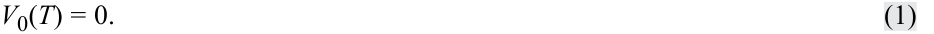
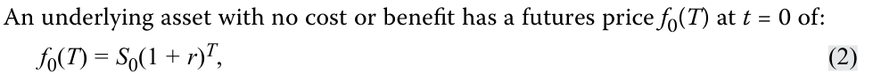
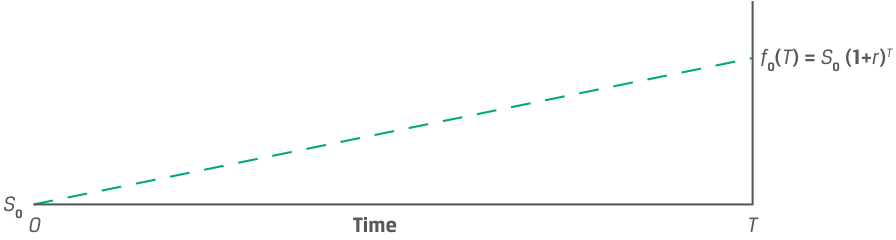
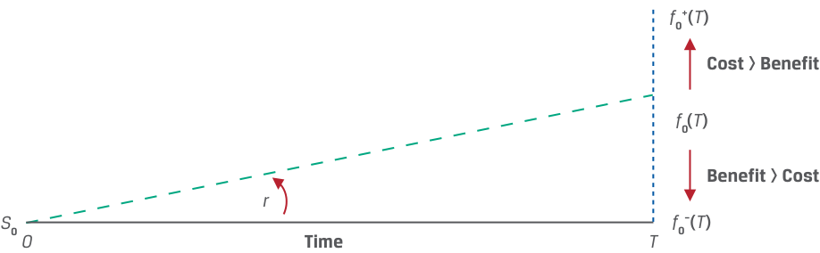
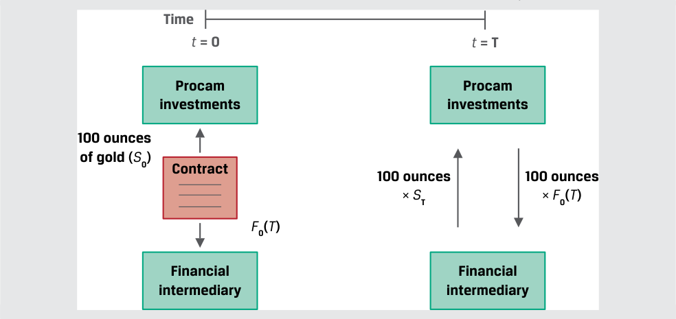
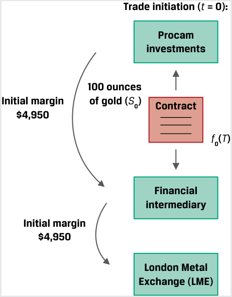
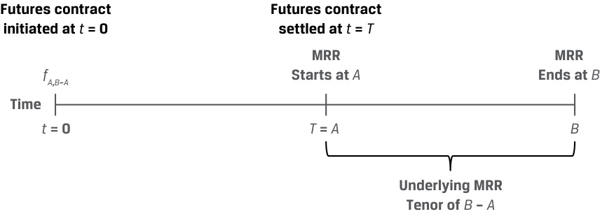
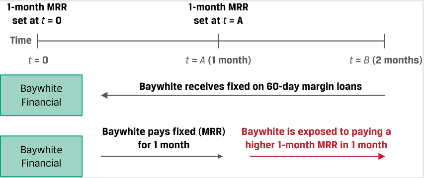

[Toàn Chương] LM06 — Learning Module 6 Pricing and Valuation of Futures Contracts
Volume 7: Derivatives
Learning Module 6 Pricing and Valuation of Futures Contracts
Part 1/2: Introduction (PDF Pages 137–150)
Tập 7: Công cụ Phái sinh (Derivatives)
Học phần 6: Định giá và Xác định Giá trị của Hợp đồng Tương lai (Pricing and Valuation of Futures Contracts)
Phần 1/2: Giới thiệu (Introduction) (Trang PDF 137–150)
L E A R N I N G M O D U L E
H Ọ C P H Ầ N
6
6
Pricing and Valuation of Futures Contracts
Định giá và Xác định Giá trị của Hợp đồng Tương lai (Pricing and Valuation of Futures Contracts)
LEARNING OUTCOMES
MỤC TIÊU HỌC TẬP (LEARNING OUTCOMES)
Mastery The candidate should be able to:
| _Mức độ Thành thạo (Mastery)_ Ứng viên cần có khả năng: |
|---|
| So sánh giá trị (value) và mức giá (price) của hợp đồng kỳ hạn (forward contracts) và hợp đồng tương lai (futures contracts). |
| Giải thích tại sao giá kỳ hạn (forward prices) và giá tương lai (futures prices) lại khác nhau. |
compare the value and price of forward and futures contracts explain why forward and futures prices differ
GIỚI THIỆU (INTRODUCTION)
INTRODUCTION
1
1
Many of the pricing and valuation principles associated with forward commitments are common to both forward and futures contracts. For example, previous lessons demonstrated that forward commitments have a price that prevents market participants from earning riskless profit through arbitrage. It was also shown that long and short forward commitments may be replicated using a combination of long or short cash positions and borrowing or lending at the risk-free rate. Finally, both forward and futures pricing and valuation incorporate the cost of carry, or the benefits and costs of owning an underlying asset over the life of a derivative contract.
Nhiều nguyên tắc định giá và xác định giá trị gắn liền với các cam kết kỳ hạn (forward commitments) đều được áp dụng chung cho cả hợp đồng kỳ hạn (forward contracts) và hợp đồng tương lai (futures contracts). Ví dụ, các bài học trước đã chứng minh rằng các cam kết kỳ hạn có một mức giá giúp ngăn chặn những người tham gia thị trường kiếm lợi nhuận phi rủi ro thông qua hoạt động kinh doanh chênh lệch giá (arbitrage). Chúng ta cũng đã thấy rằng các cam kết mua và bán kỳ hạn có thể được mô phỏng (replicated) bằng cách sử dụng sự kết hợp giữa các vị thế mua hoặc bán trên thị trường tiền mặt cùng với việc đi vay hoặc cho vay ở mức lãi suất phi rủi ro. Cuối cùng, việc định giá và xác định giá trị của cả hợp đồng kỳ hạn lẫn hợp đồng tương lai đều kết hợp chi phí lưu giữ (cost of carry), hay những lợi ích và chi phí của việc sở hữu một tài sản cơ sở trong suốt vòng đời của một hợp đồng phái sinh.
We now turn our attention to futures contracts. We discuss what distinguishes them from other forward commitments and how they are used by issuers and investors. We expand upon the daily settlement of futures contract gains and losses introduced earlier and explain the differences between forwards and futures. We also address and distinguish the interest rate futures market and its role in interest rate derivative contracts.
Giờ đây, chúng ta chuyển sự chú ý sang các hợp đồng tương lai (futures contracts). Chúng ta thảo luận về những điểm giúp phân biệt chúng với các cam kết kỳ hạn khác và cách thức chúng được sử dụng bởi các tổ chức phát hành cũng như các nhà đầu tư. Chúng ta mở rộng nội dung về cơ chế thanh toán hàng ngày (daily settlement) đối với các khoản lãi và lỗ của hợp đồng tương lai đã được giới thiệu trước đó, đồng thời giải thích những điểm khác biệt giữa hợp đồng kỳ hạn và hợp đồng tương lai. Chúng ta cũng đề cập và phân biệt thị trường hợp đồng tương lai lãi suất (interest rate futures market) cùng vai trò của nó trong các hợp đồng phái sinh lãi suất.
LEARNING MODULE OVERVIEW
TỔNG QUAN HỌC PHẦN (LEARNING MODULE OVERVIEW)
-
Futures are standardized, exchange-traded derivatives (ETDs) with zero initial value and a futures price f 0( T ) established at inception. The futures price, f 0( T ), equals the spot price compounded at the risk-free rate as in the case of a forward contract.
-
The primary difference between forward and futures valuation is the daily settlement of futures gains and losses via a margin account. Daily settlement resets the futures contract value to zero at the current futures price ft ( T ). This process continues until contract maturity and the futures price converge to the spot price, ST .
-
Hợp đồng tương lai (futures) là các công cụ phái sinh được chuẩn hóa, giao dịch trên sàn (exchange-traded derivatives – ETDs) có giá trị ban đầu bằng không và có một mức giá tương lai $f_0(T)$ được thiết lập ngay khi khởi tạo. Giá tương lai, $f_0(T)$, bằng mức giá giao ngay được ghép lãi theo lãi suất phi rủi ro giống như trong trường hợp của một hợp đồng kỳ hạn.
-
Sự khác biệt cơ bản nhất giữa việc xác định giá trị hợp đồng kỳ hạn và hợp đồng tương lai là cơ chế thanh toán hàng ngày (daily settlement) các khoản lãi và lỗ của hợp đồng tương lai thông qua một tài khoản ký quỹ (margin account). Việc thanh toán hàng ngày thiết lập lại (resets) giá trị của hợp đồng tương lai về bằng không tại mức giá tương lai hiện hành $f_t(T)$. Quy trình này tiếp diễn cho đến khi hợp đồng đáo hạn và giá tương lai hội tụ về mức giá giao ngay, $S_T$.
CFA Institute would like to thank Don Chance, PhD, CFA, for his contribution to this section, which includes material derived from material that appeared in Derivative Markets and Instruments , featured in the 2022 CFA® Program curriculum.
Viện CFA (CFA Institute) xin gửi lời cảm ơn tới Tiến sĩ Don Chance, CFA, vì những đóng góp của ông cho phần này, trong đó bao gồm nội dung được trích xuất từ tài liệu xuất hiện trong phần Thị trường và Công cụ Phái sinh (Derivative Markets and Instruments), nằm trong chương trình giảng dạy CFA® Program năm 2022.
-
The cumulative realized mark-to-market (MTM) gain or loss on a futures contract is approximately the same as for a comparable forward contract.
-
Daily settlement and margin requirements give rise to different cash flow patterns between futures and forwards, resulting in a pricing difference between the two contract types. The difference depends on both interest rate volatility and the correlation between interest rates and futures prices.
-
The futures price for short-term interest rate futures is given by (100 – yield), where yield is expressed in percentage terms. There is a price difference between interest rate futures and forward rate agreements (FRAs) due to convexity bias.
-
The emergence of derivatives central clearing has introduced futureslike margining requirements for over-the-counter (OTC) derivatives, such as forwards. This arrangement has reduced the difference in the cash flow impact of ETDs and OTC derivatives and the price difference in futures versus forwards.
-
Khoản lãi hoặc lỗ định giá theo thị trường (mark-to-market – MTM) đã thực hiện tích lũy (cumulative realized MTM gain or loss) trên một hợp đồng tương lai xấp xỉ bằng với khoản lãi hoặc lỗ trên một hợp đồng kỳ hạn tương đương.
-
Cơ chế thanh toán hàng ngày và các yêu cầu ký quỹ làm phát sinh những cấu trúc dòng tiền khác nhau giữa hợp đồng tương lai và hợp đồng kỳ hạn, dẫn đến sự khác biệt về định giá giữa hai loại hợp đồng này. Mức chênh lệch phụ thuộc vào cả độ biến động của lãi suất (interest rate volatility) lẫn mối tương quan giữa lãi suất và giá hợp đồng tương lai (correlation between interest rates and futures prices).
-
Giá hợp đồng tương lai đối với hợp đồng tương lai lãi suất ngắn hạn (short-term interest rate futures) được xác định bởi công thức $(100 - \text{lợi suất})$, trong đó lợi suất (yield) được biểu thị theo đơn vị phần trăm. Có một sự chênh lệch giá giữa hợp đồng tương lai lãi suất và hợp đồng kỳ hạn lãi suất (forward rate agreements – FRAs) do độ lệch lồi (convexity bias).
-
Sự ra đời của cơ chế bù trừ trung tâm (central clearing) đối với công cụ phái sinh đã đưa các yêu cầu ký quỹ giống như hợp đồng tương lai vào áp dụng cho các công cụ phái sinh phi tập trung (over-the-counter – OTC), chẳng hạn như hợp đồng kỳ hạn. Thỏa thuận này đã làm giảm bớt sự khác biệt trong tác động dòng tiền giữa các công cụ phái sinh giao dịch trên sàn (ETDs) và công cụ phái sinh OTC, đồng thời thu hẹp mức chênh lệch giá giữa hợp đồng tương lai so với hợp đồng kỳ hạn.
LEARNING MODULE SELF-ASSESSMENT
TỰ ĐÁNH GIÁ HỌC PHẦN (LEARNING MODULE SELF-ASSESSMENT)
These initial questions are intended to help you gauge your current level of understanding of this learning module.
Các câu hỏi ban đầu này nhằm mục đích giúp bạn tự đánh giá mức độ hiểu biết hiện tại của mình về học phần này.
- Which of the following responses is closest to the one-year futures price of a stock with a spot price ( S 0) of €125 and an annual dividend of €2.50 paid at maturity if the risk-free rate is 1%?
- A. €123.75
B. €122.50
- Đáp án nào sau đây gần nhất với mức giá tương lai kỳ hạn một năm của một cổ phiếu có giá giao ngay ($S_0$) là $€125$ và trả cổ tức hàng năm là $€2.50$ vào ngày đáo hạn nếu lãi suất phi rủi ro là $1\%$?
-
A. $€123.75$
-
B. $€122.50$
-
C. $€126.25$
-
Lời giải:
C. €126.25
A là đáp án đúng. Mức giá tương lai không có kinh doanh chênh lệch giá đối với một tài sản cơ sở có các lợi ích đã biết, chẳng hạn như cổ tức, có thể được xác định bằng phương trình sau đây:
- Solution:
A is correct. The no arbitrage futures price for an underlying asset with known benefits, such as a dividend, may be determined using the following equation:
f 0( T ) = [ S 0 − PV0( I )] (1 + r )T .
Trước tiên, giải tìm giá trị hiện tại của khoản cổ tức $\text{PV}_0(I)$ như sau: $€2.48 = (€2.50 / 1.01)$.
First, solve for the present value of the dividend PV0( I ) as follows: €2.48 = (€2.50 / 1.01).
Thay $\text{PV}_0(I)$ vào phương trình ban đầu để giải tìm $f_0(T)$:
Substitute PV0( I ) into the original equation to solve for f 0( T ):
f 0( T ) = €123.75 = (€125 − €2.48)(1.01).
- Which of the following statements regarding the gains or losses of a long forward contract position compared to a long futures contract position is most correct? Assume that the underlying is identical on both contracts and that both contracts have the same time until maturity.
-
A. The daily realized gain or loss of the forward contract position and the futures contract position are equivalent.
-
B. Before the contracts mature, the cumulative realized gains or losses of the forward contract position and the futures contract position are equivalent.
- Phát biểu nào sau đây liên quan đến các khoản lãi hoặc lỗ của một vị thế mua hợp đồng kỳ hạn (long forward contract position) so với một vị thế mua hợp đồng tương lai (long futures contract position) là đúng nhất? Giả sử rằng tài sản cơ sở là giống hệt nhau trên cả hai hợp đồng và cả hai hợp đồng có cùng khoảng thời gian cho đến khi đáo hạn.
-
A. Khoản lãi hoặc lỗ đã thực hiện hàng ngày (daily realized gain or loss) của vị thế hợp đồng kỳ hạn và vị thế hợp đồng tương lai là tương đương nhau.
-
B. Trước khi các hợp đồng đáo hạn, các khoản lãi hoặc lỗ đã thực hiện tích lũy (cumulative realized gains or losses) của vị thế hợp đồng kỳ hạn và vị thế hợp đồng tương lai là tương đương nhau.
- C. At contract maturity, the cumulative realized gains or losses of the forward contract position and the futures contract position are approximately equivalent.
- C. Khi hợp đồng đáo hạn, các khoản lãi hoặc lỗ đã thực hiện tích lũy của vị thế hợp đồng kỳ hạn và vị thế hợp đồng tương lai là xấp xỉ tương đương nhau.
Solution:
Lời giải:
C is correct. The two contracts are similar in all respects except for the frequency with which contracts are marked to market. As a result, the cumulative gain or loss is approximately the same when the contracts mature. A is incorrect because the futures contract’s daily mark-to-market (MTM) feature creates daily realized gains or losses while the forward contract’s gains or losses are realized only at contract maturity. B is incorrect because the response refers to realized gains or losses, and the contracts have not yet matured. Thus, the forward contract has generated no realized gains or losses yet.
C là đáp án đúng. Hai hợp đồng này tương tự nhau về mọi mặt ngoại trừ tần suất mà các hợp đồng được định giá theo thị trường (marked to market). Do đó, khoản lãi hoặc lỗ tích lũy là xấp xỉ như nhau khi các hợp đồng đáo hạn. A không đúng vì tính năng định giá theo thị trường (MTM) hàng ngày của hợp đồng tương lai tạo ra các khoản lãi hoặc lỗ đã thực hiện hàng ngày, trong khi các khoản lãi hoặc lỗ của hợp đồng kỳ hạn chỉ được hiện thực hóa khi hợp đồng đáo hạn. B không đúng vì đáp án này đề cập đến các khoản lãi hoặc lỗ đã thực hiện (realized), mà các hợp đồng lại chưa đáo hạn. Vì vậy, hợp đồng kỳ hạn vẫn chưa tạo ra bất kỳ khoản lãi hay lỗ đã thực hiện nào.
- Identify which of the following situations leads to which relationship between forward and futures prices for forward commitment contracts with otherwise identical terms.
- Hãy xác định tình huống nào sau đây dẫn đến mối quan hệ nào giữa giá kỳ hạn và giá tương lai đối với các hợp đồng cam kết kỳ hạn có các điều khoản khác hoàn toàn giống hệt nhau.
| 1. Futures prices are_positively_correlated with interest rates, and interest rates change over the contract period. |
A. Forward prices are above futures prices:F_0(_T) >f_0(_T). |
|---|---|
| 2. Futures prices are_negatively_correlated with interest rates, and interest rates change over the contract period. |
B. Forward and futures prices are the same:F_0(_T) =f_0(_T). |
| 3. Interest rates are constant over the forward commitment contract period. |
C. Futures prices are above for- ward prices:f_0(_T) >F_0(_T). |
| Tình huống | Mối quan hệ giữa Giá Kỳ hạn và Giá Tương lai |
|---|---|
| 1. Giá hợp đồng tương lai có tương quan dương (positively correlated) với lãi suất, và lãi suất thay đổi trong suốt kỳ hạn hợp đồng. | A. Giá kỳ hạn cao hơn giá tương lai: $F_0(T) > f_0(T)$. |
| 2. Giá hợp đồng tương lai có tương quan âm (negatively correlated) với lãi suất, và lãi suất thay đổi trong suốt kỳ hạn hợp đồng. | B. Giá kỳ hạn và giá tương lai bằng nhau: $F_0(T) = f_0(T)$. |
| 3. Lãi suất giữ nguyên không đổi trong suốt kỳ hạn của hợp đồng cam kết kỳ hạn. | C. Giá tương lai cao hơn giá kỳ hạn: $f_0(T) > F_0(T)$. |
Solution:
Lời giải:
-
C is correct. If futures prices are positively correlated with interest rates, then higher prices lead to futures profits reinvested at rising rates, and lower prices lead to losses that may be financed at lower rates.
-
A is correct. If futures prices are negatively correlated with interest rates, then higher prices lead to futures profits reinvested at lower rates, and lower prices lead to losses that must be financed at higher rates.
-
B is correct. If interest rates are constant over the forward commitment contract period, then forward and futures prices are the same.
-
Which of the following statements most correctly describes a development that has helped reduce the difference in the cash flow impact between forward and futures contracts?
-
A. Futures exchanges have moved away from daily mark-to-market recognition of gains and losses on futures contracts.
-
B. OTC derivatives have become increasingly subject to central clearing requirements.
-
C. Lower volatility in markets has reduced the magnitude of gains and losses in both types of contracts.
-
C là đáp án đúng. Nếu giá hợp đồng tương lai có tương quan dương với lãi suất, thì mức giá cao hơn sẽ dẫn đến các khoản lợi nhuận từ hợp đồng tương lai được tái đầu tư ở mức lãi suất đang tăng lên, và mức giá thấp hơn sẽ dẫn đến các khoản lỗ có thể được tài trợ ở mức lãi suất thấp hơn (làm cho vị thế mua tương lai hấp dẫn hơn mua kỳ hạn).
-
A là đáp án đúng. Nếu giá hợp đồng tương lai có tương quan âm với lãi suất, thì mức giá cao hơn sẽ dẫn đến các khoản lợi nhuận từ hợp đồng tương lai phải tái đầu tư ở mức lãi suất thấp hơn, và mức giá thấp hơn sẽ dẫn đến các khoản lỗ phải được tài trợ ở mức lãi suất cao hơn.
-
B là đáp án đúng. Nếu lãi suất giữ nguyên không đổi trong suốt kỳ hạn của hợp đồng cam kết kỳ hạn, thì giá kỳ hạn và giá tương lai là bằng nhau.
-
Phát biểu nào sau đây mô tả đúng nhất một sự phát triển đã giúp làm giảm bớt sự khác biệt trong tác động dòng tiền giữa hợp đồng kỳ hạn và hợp đồng tương lai?
-
A. Các sở giao dịch hợp đồng tương lai đã chuyển dịch rời bỏ việc ghi nhận lãi và lỗ định giá theo thị trường hàng ngày trên các hợp đồng tương lai.
-
B. Các công cụ phái sinh OTC ngày càng phải chịu các yêu cầu bù trừ trung tâm (central clearing requirements).
-
C. Độ biến động thấp hơn trên các thị trường đã làm giảm quy mô của các khoản lãi và lỗ trong cả hai loại hợp đồng.
Solution:
Lời giải:
B is correct. Under a central clearing framework for OTC derivatives, financial intermediaries that serve as counterparties are required to post daily margin or eligible collateral to the central counterparty (CCP) in a process very similar to futures margining. Dealers, therefore, often impose similar requirements on derivatives end users. A is incorrect because no such
B là đáp án đúng. Dưới khuôn khổ bù trừ trung tâm đối với các công cụ phái sinh OTC, các định chế tài chính trung gian đóng vai trò làm đối tác bị bắt buộc phải nộp khoản ký quỹ hàng ngày (daily margin) hoặc tài sản thế chấp đủ điều kiện cho đối tác trung tâm (central counterparty – CCP) theo một quy trình rất giống với cơ chế ký quỹ của hợp đồng tương lai. Do đó, các nhà tạo lập thị trường (dealers) thường áp đặt những yêu cầu tương tự lên những người sử dụng cuối cùng của công cụ phái sinh (derivatives end users). A không đúng vì không có sự
change has occurred in exchange-traded futures markets. C is incorrect because volatility changes over time are hard to categorize as higher or lower.
thay đổi nào như vậy diễn ra trên các thị trường hợp đồng tương lai giao dịch trên sàn. C không đúng vì những thay đổi về độ biến động theo thời gian rất khó để phân loại cố định là cao hơn hay thấp hơn.
2
2
PRICING OF FUTURES CONTRACTS AT INCEPTION
ĐỊNH GIÁ HỢP ĐỒNG TƯƠNG LAI KHI KHỞI TẠO (PRICING OF FUTURES CONTRACTS AT INCEPTION)
compare the value and price of forward and futures contracts
So sánh giá trị và mức giá của hợp đồng kỳ hạn và hợp đồng tương lai.
When a forward commitment is initiated, no cash is exchanged and the contract is neither an asset nor a liability to the buyer or seller. The value of both a forward contract and a futures contract at initiation is zero:
Khi một cam kết kỳ hạn được khởi tạo, không có khoản tiền mặt nào được trao đổi và hợp đồng không phải là một tài sản cũng không phải là một khoản nợ phải trả đối với bên mua hay bên bán. Giá trị của cả hợp đồng kỳ hạn lẫn hợp đồng tương lai tại thời điểm khởi tạo đều bằng không:

Một tài sản cơ sở không có chi phí hay lợi ích nào sẽ có mức giá tương lai $f_0(T)$ tại thời điểm $t = 0$ là:

where r is the risk-free rate and T is the time to maturity. As in the case of a forward contract, the futures price is the spot price compounded at the risk-free rate over the life of the contract. This is shown in Exhibit 1, where the slope of the line is equal to the risk-free rate, r .
trong đó $r$ là lãi suất phi rủi ro và $T$ là thời gian cho đến khi đáo hạn. Giống như trong trường hợp của một hợp đồng kỳ hạn, giá hợp đồng tương lai chính là mức giá giao ngay được ghép lãi theo lãi suất phi rủi ro trong suốt vòng đời của hợp đồng. Điều này được thể hiện trong Bảng minh họa 1, trong đó độ dốc của đường biểu diễn bằng với lãi suất phi rủi ro, $r$.
Exhibit 1: Futures Price at Initiation
Bảng minh họa 1: Giá Hợp đồng Tương lai tại Thời điểm Khởi tạo (Futures Price at Initiation)

Chú thích hình ảnh: Đồ thị biểu diễn đường giá tăng dần từ mức giá giao ngay $S_0$ tại thời điểm $0$ lên mức giá tương lai $f_0(T) = S_0(1 + r)^T$ tại thời điểm $T$.
As for forwards, we use discrete compounding as in Equation 2 for futures on individual underlying assets. However, for underlying assets that are comprised of a portfolio—such as an equity, fixed-income, commodity, or credit index—or where the underlying involves foreign exchange with interest rates denominated in two currencies, continuous compounding is the preferred method, as shown in Equation 3:
Giống như đối với hợp đồng kỳ hạn, chúng ta sử dụng phương pháp ghép lãi rời rạc như trong Phương trình 2 đối với hợp đồng tương lai trên từng tài sản cơ sở riêng lẻ. Tuy nhiên, đối với các tài sản cơ sở được cấu thành từ một danh mục đầu tư — chẳng hạn như chỉ số cổ phiếu, thu nhập cố định, hàng hóa, hoặc tín dụng — hoặc khi tài sản cơ sở liên quan đến ngoại hối với lãi suất được định danh bằng hai đồng tiền khác nhau, ghép lãi liên tục là phương pháp được ưu tiên sử dụng, như được thể hiện trong Phương trình 3:
f 0( T ) = S 0 erT . ~~(3)~~
EXAMPLE 1
VÍ DỤ 1 (EXAMPLE 1)
Procam Investments - Gold Futures Contract
Procam Investments – Hợp đồng Tương lai Vàng (Procam Investments - Gold Futures Contract)
As shown in a previous lesson, Procam Investments purchases a 100-ounce gold futures contract. The current spot price is $1,770.00 per ounce, the risk-free rate is 2.0%, and we assume gold may be stored at no cost. Calculate the no arbitrage futures price, f 0( T ), for settlement in 91 days ( T = 91/365 or 0.24932).
Như đã trình bày trong một bài học trước, Procam Investments mua một hợp đồng tương lai vàng quy mô $100\text{ ounce}$. Giá giao ngay hiện tại là $\$1,770.00$ mỗi ounce, lãi suất phi rủi ro là $2.0\%$, và chúng ta giả định vàng có thể được lưu kho mà không tốn chi phí. Hãy tính mức giá tương lai không có kinh doanh chênh lệch giá, $f_0(T)$, để thanh toán sau $91\text{ ngày}$ ($T = 91/365$ hay $0.24932$).
Solution
Lời giải:
Using Equation 2: f 0( T ) = S 0(1 + r )T $1,778.76 per ounce = $1,770.00 × (1.02)0.24932 Contract price = $177,876.04 (= 100 × $1,778.76)
Sử dụng Phương trình 2: $f_0(T) = S_0(1 + r)^T$
The futures price, f 0( T ), is identical to the forward price from a previous lesson.
As in the case of a forward, for underlying assets with ownership benefits or income ( I ) or costs ( C ) expressed as a known amount in present value terms at time t = 0, the spot versus futures price relationship using discrete compounding is shown in Equation 4 and Exhibit 2:
Mức giá tương lai, $f_0(T)$, hoàn toàn giống hệt với mức giá kỳ hạn từ bài học trước.
f 0( T ) = [ S 0 – PV0( I ) + PV0( C )] (1 + r)T . ~~(4)~~
Giống như trong trường hợp của một hợp đồng kỳ hạn, đối với các tài sản cơ sở có lợi ích hoặc thu nhập từ quyền sở hữu ($I$) hoặc chi phí ($C$) được biểu thị dưới dạng một số tiền đã biết tính theo giá trị hiện tại ở thời điểm $t = 0$, mối quan hệ giữa giá giao ngay so với giá tương lai sử dụng phương pháp ghép lãi rời rạc được thể hiện trong Phương trình 4 và Bảng minh họa 2:
Exhibit 2: Futures Prices with Underlying Asset Costs and Benefits
Bảng minh họa 2: Giá Hợp đồng Tương lai khi Tài sản Cơ sở có Chi phí và Lợi ích (Futures Prices with Underlying Asset Costs and Benefits)

Chú thích hình ảnh: Xuất phát từ giá giao ngay $S_0$ tại thời điểm $0$ đến thời điểm $T$: - Đường cơ sở (chỉ có lãi suất $r$): tiến tới $f_0(T)$. - Khi Chi phí $>$ Lợi ích (Cost > Benefit): đường giá tương lai dịch chuyển lên cao hơn tới mức $f_0^+(T)$. - Khi Lợi ích $>$ Chi phí (Benefit > Cost): đường giá tương lai dịch chuyển xuống thấp hơn tới mức $f_0^-(T)$.
EXAMPLE 2
VÍ DỤ 2 (EXAMPLE 2)
Procam’s Gold Futures Contract with Storage Costs
Hợp đồng Tương lai Vàng của Procam khi có Chi phí Lưu kho (Procam’s Gold Futures Contract with Storage Costs)
Procam purchased a gold futures contract in Example 1 at f 0( T ) of $177,876.04 (or $1,778.76 per ounce) with S 0 equal to $1,770 per ounce. How would _f_ 0( _T_ ) change to satisfy the no arbitrage condition if a $2 per ounce cost of gold storage and insurance were payable at the end of the contract?
Procam đã mua một hợp đồng tương lai vàng trong Ví dụ 1 tại mức giá $f_0(T)$ là $\$177,876.04$ (hay $\$1,778.76$ mỗi ounce) với $S_0$ bằng $\$1,770$ mỗi ounce. Giá $f_0(T)$ sẽ thay đổi như thế nào để thỏa mãn điều kiện không có kinh doanh chênh lệch giá nếu có khoản chi phí lưu kho và bảo hiểm vàng là $\$2$ mỗi ounce phải trả vào thời điểm kết thúc hợp đồng?
The futures price for a commodity with known storage cost amounts may be determined using Equation 4, where PV0( I ) = 0:
Mức giá tương lai đối với một hàng hóa có số tiền chi phí lưu kho đã biết có thể được xác định bằng cách sử dụng Phương trình 4, trong đó $\text{PV}_0(I) = 0$:
f 0( T ) = [ S 0 + PV0( C )] (1 + r )T .
First, solve for the present value of the storage cost per ounce, PV0( C ), as follows: PV0( C ) = $1.99 = [$2(1.02)-0.24982 ].
Trước tiên, giải tìm giá trị hiện tại của chi phí lưu kho trên mỗi ounce, $\text{PV}_0(C)$, như sau:
Substitute PV0( C ) = $1.99 into Equation 4 to solve for f 0( T ):
f 0( T ) = ($1,770.00 + $1.99)(1.02)0.24982
Thay $\text{PV}_0(C) = \$1.99$ vào Phương trình 4 để giải tìm $f_0(T)$:
= $1,780.78 per ounce
The addition of storage and insurance costs increases the difference between the spot price and futures price. Finally, as in the case of forwards, a futures price, f 0( T ), significantly below the no arbitrage price including cash costs and benefits may indicate the presence of a convenience yield.
Việc bổ sung thêm chi phí lưu kho và bảo hiểm làm gia tăng khoản chênh lệch giữa giá giao ngay và giá tương lai. Cuối cùng, giống như trong trường hợp của hợp đồng kỳ hạn, một mức giá tương lai, $f_0(T)$, nằm thấp hơn đáng kể so với mức giá không có kinh doanh chênh lệch giá (đã tính đến các chi phí và lợi ích bằng tiền mặt) có thể là dấu hiệu cho thấy sự hiện diện của lợi suất tiện ích (convenience yield).
3
3
MTM VALUATION: FORWARDS VERSUS FUTURES
XÁC ĐỊNH GIÁ TRỊ THEO THỊ TRƯỜNG (MTM): HỢP ĐỒNG KỲ HẠN SO VỚI HỢP ĐỒNG TƯƠNG LAI (MTM VALUATION: FORWARDS VERSUS FUTURES)
compare the value and price of forward and futures contracts
So sánh giá trị và mức giá của hợp đồng kỳ hạn và hợp đồng tương lai.
Examples 1 and 2 show the similarities between forward and futures prices at contract inception. Over time, different forward and futures contract features lead to different MTM values for contracts with the same underlying assets and otherwise identical details. Example 3 shows how the daily settlement of gains and losses causes this difference to arise.
Ví dụ 1 và 2 cho thấy những điểm tương đồng giữa giá kỳ hạn và giá tương lai tại thời điểm khởi tạo hợp đồng. Theo thời gian, các đặc điểm khác nhau của hợp đồng kỳ hạn và hợp đồng tương lai dẫn đến các giá trị MTM khác nhau đối với những hợp đồng có cùng tài sản cơ sở và các chi tiết khác hoàn toàn giống hệt nhau. Ví dụ 3 chỉ ra cách thức mà việc thanh toán hàng ngày (daily settlement) đối với các khoản lãi và lỗ làm phát sinh sự khác biệt này.
EXAMPLE 3
VÍ DỤ 3 (EXAMPLE 3)
Procam Forward versus Futures Pricing and Valuation
Định giá và Xác định Giá trị Hợp đồng Kỳ hạn so với Hợp đồng Tương lai của Procam (Procam Forward versus Futures Pricing and Valuation)
We extend the earlier example to compare forward and futures pricing and valuation. In both cases, Procam Investments enters a cash-settled forward commitment to buy 100 ounces of gold at a price ( f 0[ T ] = F 0[ T ]) of $1,778.76 per ounce in 91 days, with a risk-free rate of 2% and no gold storage cost.
Chúng ta mở rộng ví dụ trước đó để so sánh việc định giá và xác định giá trị của hợp đồng kỳ hạn và hợp đồng tương lai. Trong cả hai trường hợp, Procam Investments tham gia vào một cam kết kỳ hạn được tất toán bằng tiền mặt (cash-settled) để mua $100\text{ ounce}$ vàng tại mức giá ($f_0(T) = F_0(T)$) là $\$1,778.76$ mỗi ounce sau $91\text{ ngày}$, với lãi suất phi rủi ro là $2\%$ và không có chi phí lưu kho vàng.
Forward Contract
Hợp đồng Kỳ hạn (Forward Contract)
The forward price is F 0( T ) = $1,778.76 per ounce. No cash is exchanged or deposited at inception, and the contract value at inception, V 0( T ), is zero.
Giá kỳ hạn là $F_0(T) = \$1,778.76$ mỗi ounce. Không có khoản tiền mặt nào được trao đổi hoặc ký quỹ khi khởi tạo, và giá trị hợp đồng khi khởi tạo, $V_0(T)$, bằng không.

Chú thích hình ảnh: - Thời điểm $t = 0$: Procam Investments ký Hợp đồng (Contract) với Định chế tài chính trung gian đối với $100\text{ ounce}$ vàng ($S_0$) tại mức giá $F_0(T)$. - Thời điểm $t = T$: Tất toán giữa $100\text{ ounce} \times S_T$ và $100\text{ ounce} \times F_0(T)$.
Over time, the forward price, F 0( T ), does not change, and the MTM at any time, [ Vt ( T )], equals the difference between the current spot price, St , and the present value of the forward price, PV t of F 0( T ), shown from Procam’s (the forward buyer’s) perspective:
Theo thời gian, mức giá kỳ hạn, $F_0(T)$, không thay đổi, và giá trị MTM tại bất kỳ thời điểm nào, $V_t(T)$, bằng phần chênh lệch giữa giá giao ngay hiện tại, $S_t$, và giá trị hiện tại của mức giá kỳ hạn, $\text{PV}_t\text{ của }F_0(T)$, được biểu diễn dưới góc độ của Procam (bên mua kỳ hạn):
Vt(T ) = St − F 0( T )(1 + r )–(T–t) .
For example, say 71 days have elapsed and 20 days remain to maturity, T − t = 20/365 or 0.0548. If the gold spot price, ( St ), has fallen by $50 since inception to $1,720 per ounce, solve for Vt ( T ) as follows:
Ví dụ, giả sử $71\text{ ngày}$ đã trôi qua và còn lại $20\text{ ngày}$ cho đến khi đáo hạn, $T - t = 20/365$ hay $0.0548$. Nếu giá vàng giao ngay, $S_t$, đã giảm $\$50$ kể từ khi khởi tạo xuống còn $\$1,720$ mỗi ounce, ta giải tìm $V_t(T)$ như sau:
Vt ( T ) = $1,720 − $1,778.76(1.02)–0.0548
= –$56.83 per ounce, or a $5,683 MTM loss (= –$56.83 × 100 ounces).
Under terms of the forward contract, no settlement of the MTM amount occurs until maturity. This process of resetting the contract value to zero each day makes it very unlikely that the futures contract would reach a similar MTM value.
Theo các điều khoản của hợp đồng kỳ hạn, không có việc thanh toán số tiền MTM nào diễn ra cho đến tận khi đáo hạn. Quy trình thiết lập lại giá trị hợp đồng về bằng không mỗi ngày ở hợp đồng tương lai khiến cho hợp đồng tương lai rất khó có khả năng chạm tới một mức giá trị MTM tích lũy lớn tương tự như vậy tại một thời điểm.
Futures Contract
Hợp đồng Tương lai (Futures Contract)
The futures price, f 0( T ), is $1,778.76 per ounce. As per futures exchange daily settlement rules, the contract buyer and seller must post an initial cash margin of $4,950 per gold contract (100 ounces) and maintain a maintenance margin of $4,500 per contract. If a margin balance falls below $4,500, a counterparty receives a margin call and must immediately replenish its account to the initial $4,950.
Giá hợp đồng tương lai, $f_0(T)$, là $\$1,778.76$ mỗi ounce. Theo quy tắc thanh toán hàng ngày của sở giao dịch hợp đồng tương lai, bên mua và bên bán hợp đồng phải nộp một khoản ký quỹ ban đầu (*initial margin*) bằng tiền mặt là $\$4,950$ cho mỗi hợp đồng vàng ($100\text{ ounce}$) và duy trì mức ký quỹ duy trì (*maintenance margin*) là $\$4,500$ cho mỗi hợp đồng. Nếu số dư ký quỹ giảm xuống dưới mức $\$4,500$, đối tác sẽ nhận được lệnh gọi ký quỹ bổ sung (*margin call*) và phải lập tức nộp thêm tiền để đưa tài khoản của mình quay trở lại mức ký quỹ ban đầu $\$4,950$.

Chú thích hình ảnh: Khởi tạo giao dịch ($t = 0$): Procam Investments và Định chế tài chính trung gian ký hợp đồng $100\text{ ounce}$ vàng ($S_0$) tại giá $f_0(T)$, đồng thời mỗi bên đều nộp Ký quỹ ban đầu (Initial margin) là $\$4,950$ cho Sở Giao dịch Kim loại Luân Đôn (London Metal Exchange – LME).
Consider the first day of trading, where the spot gold price, ( S 0), is $1,770 per ounce and the opening gold futures price, _f_ 0( _T_ ), is $1,778.76 per ounce.
Hãy xem xét ngày giao dịch đầu tiên, trong đó giá vàng giao ngay, $S_0$, là $\$1,770$ mỗi ounce và giá mở cửa của hợp đồng tương lai vàng, $f_0(T)$, là $\$1,778.76$ mỗi ounce.
-
Assume that the gold futures price, f 1( T ), falls by $5 on the first trading day to $1,773.76 and the spot price, S 1, ends the day at a no arbitrage equivalent of $1,765.12 (= $1,773.76(1.02)–90/365 ).
-
Procam realizes a $500 MTM loss (= $5 per ounce × 100 ounces) deducted from its margin account, leaving Procam with $4,450.
-
The MTM value of Procam’s futures contract resets to zero at the futures closing price of $1,773.76 per ounce.
-
Since Procam’s margin account balance has fallen below the $4,500 maintenance level, it must deposit $500 to return the balance to the $4,950 initial margin.
-
Giả sử rằng giá hợp đồng tương lai vàng, $f_1(T)$, giảm $\$5$ vào ngày giao dịch đầu tiên xuống còn $\$1,773.76$ và giá giao ngay, $S_1$, kết thúc ngày giao dịch ở mức giá tương đương không có kinh doanh chênh lệch giá là $\$1,765.12$ ($= \$1,773.76(1.02)^{-90/365}$).
-
Procam hiện thực hóa một khoản lỗ MTM là $\$500$ ($= \$5\text{ mỗi ounce} \times 100\text{ ounce}$) bị khấu trừ trực tiếp vào tài khoản ký quỹ của mình, khiến số dư của Procam còn lại $\$4,450$.
-
Giá trị MTM của hợp đồng tương lai của Procam được thiết lập lại về mức $0$ tại mức giá đóng cửa hợp đồng tương lai là $\$1,773.76$ mỗi ounce.
-
Vì số dư tài khoản ký quỹ của Procam đã giảm xuống thấp hơn mức duy trì $\$4,500$, nên công ty phải nộp thêm $\$500$ để đưa số dư quay trở lại mức ký quỹ ban đầu $\$4,950$.
Futures versus Forward Price and Value over Time
Giá và Giá trị của Hợp đồng Tương lai so với Hợp đồng Kỳ hạn theo Thời gian (Futures versus Forward Price and Value over Time)
Using the same details, we compare the futures and forward price and value over two trading days. Assume that day two trading opens at day one’s closing spot and futures prices. The following table shows the comparison:
Sử dụng cùng các thông tin chi tiết trên, chúng ta so sánh mức giá và giá trị của hợp đồng tương lai và hợp đồng kỳ hạn qua hai ngày giao dịch. Giả sử rằng phiên giao dịch ngày thứ hai mở cửa tại mức giá giao ngay và giá tương lai đóng cửa của ngày thứ nhất. Bảng dưới đây thể hiện sự so sánh:
Beginning of Day 2 Trading
Đầu Ngày Giao dịch Thứ 2 (Beginning of Day 2 Trading)
| Contract | Contract | Contract | Realized | Margin |
|---|---|---|---|---|
| Type | Price | MTM | MTM | Deposit |
| Forward | F_0(_T) = $177,876|–$498 | $0|$0 | ||
| Futures | f_1(_T) = $177,376|$0 | –$500|$4,950 |
| Loại Hợp đồng (Contract Type) | Giá Hợp đồng (Contract Price) | Giá trị MTM của Hợp đồng (Contract MTM) | MTM Đã thực hiện (Realized MTM) | Tiền Ký quỹ (Margin Deposit) |
|---|---|---|---|---|
| Kỳ hạn (Forward) | $F_0(T) = \$177,876$|$-\$498$|$\$0$|$\$0$ | |||
| Tương lai (Futures) | $f_1(T) = \$177,376$|$\$0$|$-\$500$|$\$4,950$ |
The forward MTM contract value, Vt ( T ), equals the difference between the current spot price, S 1 = $1,765.12, and the present value of the original forward price, PV t [ F 0( T )], here with 90 days remaining to maturity, T − t = 90/365 or 0.24657:
Giá trị hợp đồng MTM kỳ hạn, $V_t(T)$, bằng phần chênh lệch giữa giá giao ngay hiện tại, $S_1 = \$1,765.12$, và giá trị hiện tại của mức giá kỳ hạn ban đầu, $\text{PV}_t[F_0(T)]$, ở đây còn lại $90\text{ ngày}$ cho đến khi đáo hạn, $T - t = 90/365$ hay $0.24657$:
Vt ( T ) = $1,765.12 − $1,778.76(1.02)–0.24657
= $4.98 per ounce.
Extending our example to the beginning of day three at the prior day’s close, assume a $4 per ounce fall in the gold futures price on day two, _f_ 2( _T_ ), to $1,769.76 and a no arbitrage equivalent spot price decline, S 2, to $1,761.24 (= $1,769.76[1.02]–89/365 ). The following table shows the summary on day three:
Mở rộng ví dụ của chúng ta sang thời điểm đầu ngày thứ ba (tại mức giá đóng cửa của ngày hôm trước), giả sử giá hợp đồng tương lai vàng giảm thêm $\$4$ mỗi ounce vào ngày thứ hai, $f_2(T)$, xuống còn $\$1,769.76$ và giá giao ngay tương đương không có kinh doanh chênh lệch giá giảm xuống mức $S_2$ là $\$1,761.24$ ($= \$1,769.76[1.02]^{-89/365}$). Bảng dưới đây thể hiện tóm tắt vào đầu ngày thứ ba:
Beginning of Day 3 Trading
Đầu Ngày Giao dịch Thứ 3 (Beginning of Day 3 Trading)
| Contract | Contract | Contract | Realized | Margin |
|---|---|---|---|---|
| Type | Price | MTM | MTM | Deposit |
| Forward | F_0(_T) = $177,876|–$895 | $0|$0 | ||
| Futures | f_2(_T) = $176,976|$0 | –$400|$4,550 |
| Loại Hợp đồng (Contract Type) | Giá Hợp đồng (Contract Price) | Giá trị MTM của Hợp đồng (Contract MTM) | MTM Đã thực hiện trong ngày (Realized MTM) | Tiền Ký quỹ (Margin Deposit) |
|---|---|---|---|---|
| Kỳ hạn (Forward) | $F_0(T) = \$177,876$|$-\$895$|$\$0$|$\$0$ | |||
| Tương lai (Futures) | $f_2(T) = \$176,976$|$\$0$|$-\$400$|$\$4,550$ |
The forward MTM contract value, Vt ( T ), equals the difference between the current spot price, S 2 = $1,761.24, and the present value of the original forward price, PV t [ F 0( T )], here with 89 days remaining to maturity, T − t = 89/365 or 0.24384:
Giá trị hợp đồng MTM kỳ hạn, $V_t(T)$, bằng phần chênh lệch giữa giá giao ngay hiện tại, $S_2 = \$1,761.24$, và giá trị hiện tại của mức giá kỳ hạn ban đầu, $\text{PV}_t[F_0(T)]$, ở đây còn lại $89\text{ ngày}$ cho đến khi đáo hạn, $T - t = 89/365$ hay $0.24384$:
Vt ( T ) = $1,761.24 − $1,778.76(1.02)–0.24384
= $8.95 per ounce.
Example 3 demonstrates the key differences in the price and value of forward and futures contracts over time. The forward contract price, F 0( T ), remains fixed until the contract matures. Forward contract MTM value changes are captured by the difference between the current spot price, St , and the present value of the forward price, PV t [ F 0( T )]. This forward contract MTM is not settled until maturity, giving rise to counterparty credit risk over time since no cash is exchanged from inception of the contract to its maturity or expiration. Futures contract prices fluctuate daily based upon market changes. The daily settlement mechanism resets the futures MTM to zero, and variation margin is exchanged to settle the difference, reducing counterparty credit risk. The cumulative realized MTM gain or loss on a futures contract is approximately the same as for a comparable forward contract. We will explore these differences in the next lesson after first turning our attention to forward and futures contracts on market reference rates.
Ví dụ 3 chứng minh những điểm khác biệt cốt lõi về mức giá và giá trị của hợp đồng kỳ hạn và hợp đồng tương lai theo thời gian. Mức giá của hợp đồng kỳ hạn, $F_0(T)$, giữ nguyên cố định cho đến khi hợp đồng đáo hạn. Những thay đổi trong giá trị MTM của hợp đồng kỳ hạn được phản ánh qua phần chênh lệch giữa giá giao ngay hiện tại, $S_t$, và giá trị hiện tại của mức giá kỳ hạn, $\text{PV}_t[F_0(T)]$. Giá trị MTM của hợp đồng kỳ hạn này không được thanh toán cho đến khi đáo hạn, làm phát sinh rủi ro tín dụng đối tác (counterparty credit risk) theo thời gian vì không có khoản tiền mặt nào được trao đổi kể từ khi khởi tạo hợp đồng cho đến khi nó đáo hạn hoặc hết hiệu lực. Ngược lại, giá hợp đồng tương lai biến động hàng ngày dựa trên những thay đổi của thị trường. Cơ chế thanh toán hàng ngày thiết lập lại giá trị MTM của hợp đồng tương lai về mức không, và khoản ký quỹ biến đổi (variation margin) được trao đổi để tất toán phần chênh lệch, qua đó làm giảm thiểu rủi ro tín dụng đối tác. Khoản lãi hoặc lỗ MTM đã thực hiện tích lũy (cumulative) trên một hợp đồng tương lai xấp xỉ bằng với một hợp đồng kỳ hạn tương đương. Chúng ta sẽ khám phá những điểm khác biệt này trong bài học tiếp theo sau khi chuyển sự chú ý sang các hợp đồng kỳ hạn và hợp đồng tương lai dựa trên lãi suất tham chiếu thị trường trước tiên.
4
4
INTEREST RATE FUTURES VERSUS FORWARD CONTRACTS
HỢP ĐỒNG TƯƠNG LAI LÃI SUẤT SO VỚI HỢP ĐỒNG KỲ HẠN LÃI SUẤT (INTEREST RATE FUTURES VERSUS FORWARD CONTRACTS)
compare the value and price of forward and futures contracts
So sánh giá trị và mức giá của hợp đồng kỳ hạn và hợp đồng tương lai.
In an earlier lesson on interest rate forward contracts, zero rates derived from coupon bonds were used to derive a future investment breakeven rate (or implied forward rate). The implied forward rate was shown to equal the no arbitrage fixed rate on a forward rate agreement (FRA) under which counterparties exchange a fixed-for-floating cash flow at a time in the future.
Trong một bài học trước về hợp đồng kỳ hạn lãi suất, các mức lãi suất zero được suy ra từ những trái phiếu trả lãi định kỳ đã được sử dụng để tính ra mức lãi suất hòa vốn đầu tư trong tương lai (hay lãi suất kỳ hạn ngầm định – implied forward rate). Lãi suất kỳ hạn ngầm định đã được chứng minh là bằng với mức lãi suất cố định không có kinh doanh chênh lệch giá trên một hợp đồng kỳ hạn lãi suất (FRA) mà theo đó các đối tác trao đổi một dòng tiền cố định lấy dòng tiền thả nổi tại một thời điểm trong tương lai.
Futures markets on short-term interest rates offer market participants a highly liquid, standardized alternative to FRAs. Interest rate futures contracts are available for monthly or quarterly market reference rates for successive periods out to final contract maturities of up to ten years in the future. Although the underlying variable is the market reference rate (MRR) on a hypothetical deposit on a future date as for forward rate agreements, interest rate futures trade on a price basis as per the following general formula:
Các thị trường hợp đồng tương lai dựa trên lãi suất ngắn hạn cung cấp cho những người tham gia thị trường một công cụ thay thế được chuẩn hóa và có tính thanh khoản cao cho các hợp đồng FRA. Các hợp đồng tương lai lãi suất hiện có sẵn cho các mức lãi suất tham chiếu thị trường hàng tháng hoặc hàng quý cho các kỳ liên tiếp kéo dài tới những kỳ hạn hợp đồng cuối cùng lên đến mười năm trong tương lai. Mặc dù biến số cơ sở là lãi suất tham chiếu thị trường (MRR) trên một khoản tiền gửi giả định vào một ngày trong tương lai giống như đối với hợp đồng kỳ hạn lãi suất, nhưng hợp đồng tương lai lãi suất lại được giao dịch trên cơ sở mức giá (price basis) theo công thức tổng quát sau đây:
fA , B − A = 100 − (100 × MRR A , B − A ), ~~(5)~~
where fA , B − A represents the futures price for a market reference rate for B − A periods that begins in A periods (MRR A , B − A ), as shown in Exhibit 3.
trong đó $f_{A,B-A}$ đại diện cho mức giá hợp đồng tương lai đối với một lãi suất tham chiếu thị trường cho khoảng thời gian $B - A$ kỳ bắt đầu sau $A$ kỳ ($\text{MRR}_{A,B-A}$), như được thể hiện trong Bảng minh họa 3.
Exhibit 3: Interest Rate Futures Contract Mechanics
Bảng minh họa 3: Cơ chế Hoạt động của Hợp đồng Tương lai Lãi suất (Interest Rate Futures Contract Mechanics)

Chú thích hình ảnh: - Tại $t = 0$: Hợp đồng tương lai được khởi tạo với mức giá $f_{A,B-A}$. - Tại $T = A$: Hợp đồng tương lai được tất toán tại thời điểm $t = T = A$, là lúc kỳ tính lãi $\text{MRR}$ bắt đầu. - Từ $T = A$ đến $B$: Lãi suất $\text{MRR}$ cơ sở có kỳ hạn (Tenor) là $B - A$ (bắt đầu tại $A$ và kết thúc tại $B$).
For example, we may solve for the implied three-month MRR rate in three months’ time (where A = 3m, B = 6m, B − A = 3m) if an interest rate futures contract is trading at a price of 98.25 using Equation 5:
Ví dụ, chúng ta có thể giải tìm mức lãi suất MRR kỳ hạn ba tháng ngầm định bắt đầu sau ba tháng nữa (trong đó $A = 3\text{m}$, $B = 6\text{m}$, $B - A = 3\text{m}$) nếu một hợp đồng tương lai lãi suất đang được giao dịch ở mức giá $98.25$ bằng cách sử dụng Phương trình 5:
f 3 m ,3 m : 98.25 = 100 − (100 × MRR A , B − A )
MRR3 m ,3 m = 1.75%.
This (100 − yield) price convention results in an inverse price/yield relationship but is not the same as the price of a zero-coupon bond at the contract rate. A long futures position involves earning or receiving MRR in A periods, whereas a short position involves paying MRR in A periods. The interest rate exposure profile for long and short futures contracts are as follows:
Quy ước yết giá $(100 - \text{lợi suất})$ này tạo ra mối quan hệ nghịch biến giữa giá và lợi suất nhưng không giống với mức giá của một trái phiếu không trả lãi định kỳ tại mức lãi suất hợp đồng đó. Một vị thế mua hợp đồng tương lai (long futures position) liên quan đến việc kiếm được hoặc nhận lãi suất MRR sau $A$ kỳ (tương đương người cho vay/gửi tiền), trong khi một vị thế bán (short position) liên quan đến việc trả lãi suất MRR sau $A$ kỳ (tương đương người đi vay). Cấu trúc rủi ro lãi suất đối với các hợp đồng tương lai mua và bán như sau:
-
Long futures contract (lender): Gains as prices rise, future MRR falls
-
Short futures contract (borrower): Gains as prices fall, future MRR rises
-
Mua hợp đồng tương lai (Long futures contract – bên cho vay): Có lãi khi giá hợp đồng tương lai tăng lên, tức khi lãi suất MRR tương lai giảm xuống.
-
Bán hợp đồng tương lai (Short futures contract – bên đi vay): Có lãi khi giá hợp đồng tương lai giảm xuống, tức khi lãi suất MRR tương lai tăng lên.
In an earlier lesson, Yangzi Bank enters into an FRA as a fixed-rate payer to hedge a liability on which it owes MRR in the future, realizing a gain on the FRA contract as rates rise. Note that this would be equivalent to taking a short position on a CNY MRR futures contract if one were available. Exhibit 4 summarizes the relationship between futures and FRAs.
Trong một bài học trước, Ngân hàng Yangzi đã tham gia vào một hợp đồng FRA với tư cách là bên trả lãi suất cố định để phòng ngừa rủi ro cho một khoản nợ phải trả mà ngân hàng phải trả lãi theo MRR trong tương lai, qua đó hiện thực hóa một khoản lãi trên hợp đồng FRA khi lãi suất tăng lên. Lưu ý rằng điều này sẽ tương đương với việc thiết lập một vị thế bán (short position) trên một hợp đồng tương lai lãi suất MRR đồng CNY nếu có sẵn một hợp đồng như vậy. Bảng minh họa 4 tóm tắt mối quan hệ giữa hợp đồng tương lai lãi suất và hợp đồng FRA.
Exhibit 4: Interest Rate Futures versus FRAs
Bảng minh họa 4: Hợp đồng Tương lai Lãi suất so với Hợp đồng FRA (Interest Rate Futures versus FRAs)
| Contract Type | Gains from Rising MRR | Gains from Falling MRR |
|---|---|---|
| Interest rate | Short futures contract | Long futures contract |
| futures | ||
| Forward rate agreement |
Long FRA: FRA fixed-rate payer (FRA floating-rate receiver) |
Short FRA: FRA floating-rate payer (FRA fixed-rate receiver) |
| Loại Hợp đồng (Contract Type) | Có Lãi khi MRR Tăng (Gains from Rising MRR) | Có Lãi khi MRR Giảm (Gains from Falling MRR) |
|---|---|---|
| Hợp đồng tương lai lãi suất (Interest rate futures) | Bán hợp đồng tương lai (Short futures contract) | Mua hợp đồng tương lai (Long futures contract) |
| Hợp đồng kỳ hạn lãi suất (Forward rate agreement) | Mua FRA (Long FRA): Bên trả lãi suất cố định FRA (bên nhận lãi suất thả nổi FRA) | Bán FRA (Short FRA): Bên trả lãi suất thả nổi FRA (bên nhận lãi suất cố định FRA) |
Interest rate futures daily settlement occurs based on price changes, which translate into futures contract basis point value (BPV) as follows:
Việc thanh toán hàng ngày của hợp đồng tương lai lãi suất diễn ra dựa trên những thay đổi về giá, được quy đổi thành giá trị một điểm cơ bản của hợp đồng tương lai (futures contract basis point value – BPV) như sau:
Futures Contract BPV = Notional Principal × 0.01% × Period.
~~(6)~~
Ví dụ, giả sử vốn gốc danh nghĩa là $\$1,000,000$ đối với lãi suất MRR kỳ hạn ba tháng ở mức $2.21\%$ cho một quý (hay $90/360\text{ ngày}$), giá trị hợp đồng tiền gửi cơ sở sẽ là:
For example, assuming a $1,000,000 notional for three-month MRR of 2.21% for one quarter (or 90/360 days), the underlying deposit contract value would be:
- $1,005,525 = $1,000,000 × [1 + (2.21% / 4)].
Consider how a one basis point (0.01%) change in MRR affects contract value:
Hãy xem xét cách thức một sự thay đổi một điểm cơ bản ($1\text{ bp} = 0.01\%$) trong lãi suất MRR tác động đến giá trị hợp đồng:
-
1 bp increase (2.22%): $1,005,550 = $1,000,000 × [1 + (2.22% / 4)].
-
1 bp decrease (2.20%): $1,005,500 = $1,000,000 × [1 + (2.20% / 4)].
-
Tăng $1\text{ bp}$ ($2.22\%$): $\$1,005,550 = \$1,000,000 \times [1 + (2.22\% / 4)]$.
-
Giảm $1\text{ bp}$ ($2.20\%$): $\$1,005,500 = \$1,000,000 \times [1 + (2.20\% / 4)]$.
Both the increase and decrease in MRR by one basis point change the contract BPV by $25. Short-term interest rate futures are characterized by a fixed linear relationship between price and yield changes. The following example illustrates their use in practice.
Cả sự gia tăng lẫn sự sụt giảm một điểm cơ bản của lãi suất MRR đều làm thay đổi BPV của hợp đồng một lượng là $\$25$. Hợp đồng tương lai lãi suất ngắn hạn được đặc trưng bởi một mối quan hệ tuyến tính cố định (fixed linear relationship) giữa sự thay đổi giá và sự thay đổi lợi suất. Ví dụ sau đây minh họa việc sử dụng chúng trong thực tiễn.
EXAMPLE 4
VÍ DỤ 4 (EXAMPLE 4)
Interest Rate Futures - Baywhite Margin Loan Book
Hợp đồng Tương lai Lãi suất – Sổ Cho vay Ký quỹ của Baywhite (Interest Rate Futures - Baywhite Margin Loan Book)
In an earlier example, Baywhite Financial offered 60-day margin loans at fixed rates to its clients and borrowed at a variable one-month MRR to finance the loans. Describe Baywhite’s residual interest rate exposure and how it may use interest rate futures as a hedge.
Trong một ví dụ trước, Baywhite Financial đã cung cấp các khoản cho vay ký quỹ kỳ hạn $60\text{ ngày}$ với lãi suất cố định cho khách hàng của mình và đi vay ở mức lãi suất MRR kỳ hạn một tháng biến đổi để tài trợ cho các khoản cho vay đó. Hãy mô tả rủi ro lãi suất còn lại của Baywhite và cách thức công ty có thể sử dụng hợp đồng tương lai lãi suất làm công cụ phòng ngừa rủi ro.

Chú thích hình ảnh: - Từ $t = 0$ đến $t = B$ ($2\text{ tháng}$): Baywhite nhận lãi suất cố định trên các khoản cho vay ký quỹ $60\text{ ngày}$ (receives fixed on 60-day margin loans). - Từ $t = 0$ đến $t = A$ ($1\text{ tháng}$): Lãi suất MRR 1 tháng được ấn định tại $t = 0$; Baywhite trả lãi cố định (MRR đã biết) cho 1 tháng đầu. - Từ $t = A$ ($1\text{ tháng}$) đến $t = B$ ($2\text{ tháng}$): Lãi suất MRR 1 tháng mới được ấn định tại $t = A$; Baywhite đối mặt với rủi ro phải trả mức lãi suất MRR 1 tháng cao hơn sau 1 tháng nữa.
The diagram shows that Baywhite faces the risk of higher MRR in one month’s time (MRR1,1), which would reduce the return on its fixed margin loans. In the prior example, Baywhite entered an FRA where it agreed to pay fixed one-month MRR and receive floating. If Baywhite were to use an interest rate futures contract instead, it would sell a futures contract on one-month MRR. The futures contract BPV for a $50,000,000 notional amount is:
Sơ đồ cho thấy rằng Baywhite đối mặt với rủi ro lãi suất MRR tăng cao hơn sau thời gian một tháng nữa ($\text{MRR}_{1,1}$), điều này sẽ làm giảm mức sinh lợi trên các khoản cho vay ký quỹ lãi suất cố định của công ty. Trong ví dụ trước, Baywhite đã tham gia vào một hợp đồng FRA trong đó công ty đồng ý trả lãi suất cố định kỳ hạn một tháng và nhận lãi suất thả nổi. Nếu thay vào đó Baywhite sử dụng một hợp đồng tương lai lãi suất, công ty sẽ bán (sell) một hợp đồng tương lai dựa trên lãi suất MRR một tháng. Giá trị BPV của hợp đồng tương lai đối với số vốn gốc danh nghĩa $\$50,000,000$ là:
Contract BPV = $416.67 (= $50,000,000 × 0.01% × [1/12]).
If Baywhite sells f 1,1 for $98.75 (or MRR1,1 = 1.25%) and settles at maturity at a price of $97.75 (MRR1,1 = 2.25%), it would expect to have a cumulative gain on the contract through maturity equal to $41,667 (= Contract BPV × 100 bps).
Nếu Baywhite bán hợp đồng tương lai $f_{1,1}$ ở mức giá $\$98.75$ (tức $\text{MRR}{1,1} = 1.25\%$) và tất toán khi đáo hạn ở mức giá $\$97.75$ ($\text{MRR}{1,1} = 2.25\%$), công ty sẽ kỳ vọng thu được một khoản lãi *tích lũy* (*cumulative gain*) trên hợp đồng cho đến khi đáo hạn bằng $\$41,667$ ($= \text{BPV Hợp đồng} \times 100\text{ bps}$).
QUESTION SET
BỘ CÂU HỎI (QUESTION SET)
Valuation and Pricing of Futures Contracts
-
Identify which of the following features corresponds to which type of forward commitment contract.
-
The daily change in contract price is used to determine and settle the MTM.
-
Inclusion of storage and insurance costs increases the difference between the spot and forward commitment contract price.
-
The contract price established at inception remains unchanged over time.
Xác định Giá trị và Định giá Hợp đồng Tương lai (Valuation and Pricing of Futures Contracts)
A. Forward contract
- Hãy xác định đặc điểm nào sau đây tương ứng với loại hợp đồng cam kết kỳ hạn nào.
B. Futures contract
| Đặc điểm | Loại Hợp đồng Cam kết Kỳ hạn |
|---|---|
| 1. Sự thay đổi hàng ngày của giá hợp đồng được sử dụng để xác định và tất toán giá trị MTM. | A. Hợp đồng kỳ hạn (Forward contract) |
| 2. Việc tính gộp thêm chi phí lưu kho và bảo hiểm làm gia tăng khoản chênh lệch giữa giá giao ngay và giá hợp đồng cam kết kỳ hạn. | B. Hợp đồng tương lai (Futures contract) |
| 3. Mức giá hợp đồng được thiết lập khi khởi tạo giữ nguyên không đổi theo thời gian. | C. Cả hợp đồng kỳ hạn lẫn hợp đồng tương lai (Both a forward and a futures contract) |
C. Both a forward and a futures contract
Solution:
Lời giải:
-
B is correct. The futures contract price change at the close of each trading day is used to determine the daily MTM settlement via the margin account.
-
C is correct. Storage and insurance costs increase the forward commitment price for both forward and futures contracts.
-
A is correct. The forward contract price, F 0( T ), established at t = 0 remains unchanged and is used to calculate the MTM settlement at maturity.
-
Calculate the correct answer to fill in the blank and justify your response: An investor entered a short oil futures contract position three months ago on 1,000 barrels at an initial price of $69.00 per barrel. The constant riskfree rate is 0.50%. Daily oil spot and futures prices for the final 10 days of trading are shown in the following table. The change in the investor’s futures contract value on day T – 5 is closest to ___.
-
B là đáp án đúng. Sự thay đổi giá của hợp đồng tương lai vào lúc đóng cửa mỗi ngày giao dịch được sử dụng để xác định khoản thanh toán MTM hàng ngày thông qua tài khoản ký quỹ.
-
C là đáp án đúng. Chi phí lưu kho và bảo hiểm làm tăng mức giá cam kết kỳ hạn đối với cả hợp đồng kỳ hạn lẫn hợp đồng tương lai.
-
A là đáp án đúng. Mức giá của hợp đồng kỳ hạn, $F_0(T)$, được thiết lập tại thời điểm $t = 0$ giữ nguyên không đổi và được sử dụng để tính toán khoản thanh toán MTM khi đáo hạn.
-
Hãy tính câu trả lời đúng để điền vào chỗ trống và giải thích câu trả lời của bạn: Một nhà đầu tư đã tham gia một vị thế bán hợp đồng tương lai dầu mỏ (short oil futures contract position) cách đây ba tháng đối với $1,000\text{ thùng}$ dầu ở mức giá ban đầu là $\$69.00$ mỗi thùng. Lãi suất phi rủi ro không đổi là $0.50\%$. Giá dầu giao ngay và giá dầu tương lai hàng ngày trong $10\text{ ngày}$ giao dịch cuối cùng được trình bày trong bảng dưới đây. Sự thay đổi trong giá trị hợp đồng tương lai của nhà đầu tư vào ngày $T - 5$ gần nhất với _______________.
|Day|Crude Oil Spot Price ($)**|**Crude Oil Futures Price ($)| |---|---|---| |T-10|69.62|68.69| |T-9|69.01|68.11| |T-8|66.88|66.15| |T-7|65.18|64.77| |T-6|66.72|66.02| |T-5|68.59|68.01| |T-4|68.80|68.08| |T-3|68.93|68.32| |T-2|69.43|69.15|
|Ngày (Day)|Giá Dầu thô Giao ngay ($)**|**Giá Dầu thô Tương lai ($)| |---|---|---| |$T-10$|$69.62$|$68.69$| |$T-9$|$69.01$|$68.11$| |$T-8$|$66.88$|$66.15$| |$T-7$|$65.18$|$64.77$| |$T-6$|$66.72$|$66.02$| |$T-5$|$68.59$|$68.01$| |$T-4$|$68.80$|$68.08$| |$T-3$|$68.93$|$68.32$| |$T-2$|$69.43$|$69.15$|
|Day|Crude Oil Spot Price ($)**|**Crude Oil Futures Price ($)| |---|---|---| |T-1|69.36|69.18| |T|70.03|70.03|
|Ngày (Day)|Giá Dầu thô Giao ngay ($)**|**Giá Dầu thô Tương lai ($)| |---|---|---| |$T-1$|$69.36$|$69.18$| |$T$|$70.03$|$70.03$|
Solution:
Lời giải:
The answer is $(1,990). The MTM of the investor’s futures position is the daily futures price change on Day T – 5 per barrel multiplied by 1,000 barrels:
Câu trả lời là $-\$1,990$ hay $\$(1,990)$. Giá trị MTM của vị thế hợp đồng tương lai của nhà đầu tư chính là sự thay đổi giá hợp đồng tương lai hàng ngày vào Ngày $T - 5$ trên mỗi thùng nhân với $1,000\text{ thùng}$:
VT −5( T ) = – [ –fT −5( T ) – fT −6( T )– ] × 1,000 = – (68.01 – 66.02) × 1,000 = – $1,990.
Note the negative sign refers to the investor’s short futures position. The investor realizes a loss as the futures price rises due to the short position.
Lưu ý rằng dấu âm đề cập đến vị thế bán hợp đồng tương lai (short futures position) của nhà đầu tư. Nhà đầu tư hiện thực hóa một khoản lỗ khi giá hợp đồng tương lai tăng lên do đang nắm giữ vị thế bán.
- Determine the correct answers to complete the following sentences: The daily settlement mechanism resets the futures MTM to _, and margin is exchanged to settle the difference. The __ realized MTM gain or loss on a futures contract is approximately the same as for a comparable forward contract.
- Xác định các từ đúng để hoàn thành những câu sau đây: Cơ chế thanh toán hàng ngày thiết lập lại giá trị MTM của hợp đồng tương lai về mức __________, và tiền ký quỹ được trao đổi để tất toán phần chênh lệch. Khoản lãi hoặc lỗ MTM đã thực hiện ___________ trên một hợp đồng tương lai xấp xỉ bằng với một hợp đồng kỳ hạn tương đương.
Solution:
Lời giải:
The daily settlement mechanism resets the futures MTM to zero , and margin is exchanged to settle the difference. The cumulative realized MTM gain or loss on a futures contract is approximately the same as for a comparable forward contract.
Cơ chế thanh toán hàng ngày thiết lập lại giá trị MTM của hợp đồng tương lai về mức không (zero), và tiền ký quỹ được trao đổi để tất toán phần chênh lệch. Khoản lãi hoặc lỗ MTM đã thực hiện tích lũy (cumulative) trên một hợp đồng tương lai xấp xỉ bằng với một hợp đồng kỳ hạn tương đương.
- Identify the following statement as true or false and justify your answer: An FRA fixed-rate receiver (floating-rate payer) position is equivalent to a long interest rate futures contract on MRR, as both positions realize a gain as MRR falls below the initial fixed rate.
- Hãy xác định phát biểu sau đây là đúng hay sai và giải thích câu trả lời của bạn: Một vị thế nhận lãi suất cố định (trả lãi suất thả nổi) trong hợp đồng FRA tương đương với một vị thế mua hợp đồng tương lai lãi suất dựa trên lãi suất MRR, vì cả hai vị thế đều hiện thực hóa một khoản lãi khi lãi suất MRR giảm xuống dưới mức lãi suất cố định ban đầu.
Solution:
Lời giải:
The statement is true. An FRA fixed-rate receiver (floating-rate payer) position realizes a gain as MRR falls as the counterparty receives the fixed MRR and owes the floating MRR in the future. A long futures contract price is based on (100 − yield), which rises as yield-to-maturity (MRR) falls.
Phát biểu này là đúng. Một vị thế nhận lãi suất cố định (trả lãi suất thả nổi) trong hợp đồng FRA hiện thực hóa một khoản lãi khi lãi suất MRR giảm xuống vì đối tác nhận được mức lãi suất cố định và chỉ phải trả mức lãi suất MRR thả nổi thấp hơn trong tương lai. Mức giá của một hợp đồng tương lai mua được dựa trên công thức $(100 - \text{lợi suất})$, vốn sẽ tăng lên khi lợi suất đáo hạn (MRR) giảm xuống.
- From May 2020 to January 2021, the three-month SONIA (Sterling Overnight Index Average) futures contract expiring in June 2021 traded at a price above 100. Describe the interest rate scenario implied by this futures price and justify your response.
- Từ tháng 5 năm 2020 đến tháng 1 năm 2021, hợp đồng tương lai lãi suất SONIA (Sterling Overnight Index Average – Lãi suất Chỉ số Qua đêm Đồng Bảng Anh) kỳ hạn ba tháng đáo hạn vào tháng 6 năm 2021 đã được giao dịch ở mức giá trên $100$. Hãy mô tả kịch bản lãi suất được ngầm định bởi mức giá hợp đồng tương lai này và giải thích câu trả lời của bạn.
Solution:
Lời giải:
The future interest rate scenario implied by the futures price above 100 is a negative SONIA interest rate in June 2021. For example, if we consider the futures price for three-month SONIA one year forward as of June 2020 from Equation 5:
Kịch bản lãi suất tương lai được ngầm định bởi mức giá hợp đồng tương lai lớn hơn $100$ là một mức lãi suất SONIA âm vào tháng 6 năm 2021. Ví dụ, nếu chúng ta xem xét mức giá hợp đồng tương lai đối với lãi suất SONIA kỳ hạn ba tháng bắt đầu sau một năm nữa tính tại thời điểm tháng 6 năm 2020 từ Phương trình 5:
- f 1 y ,3 m = 100 − (100 × MRR1 y ,3 m ) .
If f 1 y ,3 m > 100, this implies that MRR1 y ,3 m < 0.
Nếu $f_{1\text{y},3\text{m}} > 100$, điều này ngụ ý rằng $\text{MRR}_{1\text{y},3\text{m}} < 0$.
FORWARD AND FUTURES PRICE DIFFERENCES
SỰ KHÁC BIỆT GIỮA GIÁ KỲ HẠN VÀ GIÁ TƯƠNG LAI (FORWARD AND FUTURES PRICE DIFFERENCES)
5
5
explain why forward and futures prices differ
Giải thích tại sao giá kỳ hạn và giá tương lai lại khác nhau.
Despite their similar symmetric payoff profile at maturity, differences exist between forward and futures valuation and pricing because of different cash flow profiles over the life of a futures versus a forward contract with otherwise similar characteristics. The distinguishing features of a futures contract are the posting of initial margin, daily mark-to-market, and settlement of gains and losses.
Mặc dù có cấu trúc lợi nhuận đối xứng tương tự nhau khi đáo hạn, nhưng vẫn tồn tại những sự khác biệt giữa việc xác định giá trị và định giá của hợp đồng kỳ hạn và hợp đồng tương lai bởi vì cấu trúc dòng tiền khác nhau trong suốt vòng đời của một hợp đồng tương lai so với một hợp đồng kỳ hạn có các đặc điểm khác tương tự nhau. Những tính năng phân biệt của một hợp đồng tương lai là việc nộp ký quỹ ban đầu (posting of initial margin), định giá theo thị trường hàng ngày (daily mark-to-market), và tất toán hàng ngày các khoản lãi và lỗ.
These features limit the MTM value of a futures contract to the daily gain or loss since the previous day’s settlement. When that value is paid out in the daily settlement via the margin account, the futures price resets to the current settlement price and the MTM value goes to zero. Forward contracts, on the other hand, involve privately negotiated credit terms (which sometimes involve cash or securities collateral) and do not require daily MTM cash settlement. Forward contract settlement occurs at maturity in a one-time cash settlement of the cumulative change in contract value.
Những tính năng này giới hạn giá trị MTM của một hợp đồng tương lai ở mức khoản lãi hoặc lỗ hàng ngày tính từ lần thanh toán của ngày hôm trước. Khi giá trị đó được chi trả trong đợt thanh toán hàng ngày thông qua tài khoản ký quỹ, giá hợp đồng tương lai được thiết lập lại về mức giá thanh toán hiện hành và giá trị MTM trở về bằng không. Mặt khác, các hợp đồng kỳ hạn liên quan đến các điều khoản tín dụng được đàm phán riêng tư (đôi khi có bao gồm tài sản thế chấp bằng tiền mặt hoặc chứng khoán) và không yêu cầu tất toán MTM bằng tiền mặt hàng ngày. Việc tất toán hợp đồng kỳ hạn diễn ra vào ngày đáo hạn trong một lần thanh toán bằng tiền mặt duy nhất đối với toàn bộ phần thay đổi tích lũy trong giá trị hợp đồng.
The different patterns of cash flows for forwards and futures can lead to a difference in the pricing of forwards versus futures. Forward and futures prices are identical under certain conditions, namely:
Các cấu trúc dòng tiền khác nhau của hợp đồng kỳ hạn và hợp đồng tương lai có thể dẫn đến sự khác biệt trong việc định giá hợp đồng kỳ hạn so với hợp đồng tương lai. Giá kỳ hạn và giá tương lai hoàn toàn giống hệt nhau dưới những điều kiện nhất định, cụ thể là:
-
if interest rates are constant, or
-
if futures prices and interest rates are uncorrelated.
-
nếu lãi suất là hằng số không đổi (constant), hoặc
-
nếu giá hợp đồng tương lai và lãi suất không có tương quan với nhau (uncorrelated).
On the other hand, violations of these assumptions can give rise to differences in pricing between these two contracts. For example, if futures prices are positively correlated with interest rates, long futures contracts are more attractive than long forward positions for the same underlying and maturity. The reason is because rising prices lead to futures profits that are reinvested in periods of rising interest rates, and falling prices lead to losses that occur in periods of falling interest rates. The price differential will also vary with the volatility of interest rates.
Mặt khác, việc vi phạm những giả định này có thể làm phát sinh sự khác biệt trong định giá giữa hai loại hợp đồng này. Ví dụ, nếu giá hợp đồng tương lai có tương quan dương (positively correlated) với lãi suất, các hợp đồng mua tương lai (long futures contracts) sẽ hấp dẫn hơn so với các vị thế mua kỳ hạn (long forward positions) đối với cùng một tài sản cơ sở và cùng kỳ hạn. Lý do là bởi vì giá tăng lên dẫn đến các khoản lợi nhuận từ hợp đồng tương lai được đem đi tái đầu tư ngay trong những giai đoạn lãi suất đang tăng cao, và giá giảm xuống dẫn đến các khoản lỗ phát sinh trong những giai đoạn lãi suất đang giảm thấp (chi phí tài trợ thấp). Mức chênh lệch giá cũng sẽ thay đổi tùy theo độ biến động của lãi suất.
A negative correlation between futures prices and interest rates leads to the opposite interpretation, with long forward positions being more desirable than long futures positions. In general, the more desirable contract will tend to have the higher price.
Mối tương quan âm (negative correlation) giữa giá hợp đồng tương lai và lãi suất dẫn đến cách diễn giải ngược lại, trong đó các vị thế mua kỳ hạn được ưa chuộng hơn so với các vị thế mua tương lai. Nhìn chung, hợp đồng nào được ưa chuộng hơn sẽ có xu hướng có mức giá cao hơn.
INTEREST RATE FORWARD AND FUTURES PRICE DIFFERENCES
SỰ KHÁC BIỆT GIỮA GIÁ KỲ HẠN LÃI SUẤT VÀ GIÁ TƯƠNG LAI LÃI SUẤT (INTEREST RATE FORWARD AND FUTURES PRICE DIFFERENCES)
6
6
explain why forward and futures prices differ
Giải thích tại sao giá kỳ hạn và giá tương lai lại khác nhau.
The short maturity of most futures contracts and the ability of most market participants to borrow near risk-free rates for these maturities typically results in little to no distinction between futures and forward prices. An exception to this is the so-called convexity bias , which arises given the difference in price changes for interest rate futures versus forward contracts, as illustrated in the following example.
Kỳ hạn ngắn của hầu hết các hợp đồng tương lai và khả năng của phần lớn những người tham gia thị trường trong việc đi vay ở mức gần với lãi suất phi rủi ro cho các kỳ hạn này thường dẫn đến việc có rất ít hoặc không có sự phân biệt nào giữa giá tương lai và giá kỳ hạn. Một ngoại lệ đối với điều này là cái gọi là độ lệch lồi (convexity bias), phát sinh do sự khác biệt trong mức thay đổi giá đối với hợp đồng tương lai lãi suất so với hợp đồng kỳ hạn lãi suất, như được minh họa trong ví dụ sau đây.
EXAMPLE 5
VÍ DỤ 5 (EXAMPLE 5)
Interest Rate Forwards versus Futures
Hợp đồng Kỳ hạn Lãi suất so với Hợp đồng Tương lai Lãi suất (Interest Rate Forwards versus Futures)
Let us return to an example from the prior lesson with an interest rate futures contract of $1,000,000 notional for three-month MRR of 2.21% for one quarter (or 90/360 days). Recall that the underlying deposit contract value was:
Chúng ta hãy quay trở lại một ví dụ từ bài học trước với một hợp đồng tương lai lãi suất có vốn gốc danh nghĩa $\$1,000,000$ đối với lãi suất MRR kỳ hạn ba tháng ở mức $2.21\%$ cho một quý (hay $90/360\text{ ngày}$). Hãy nhớ lại rằng giá trị hợp đồng tiền gửi cơ sở là:
$1,005,525 = $1,000,000 × [1 + (2.21% / 4)].
The contract BPV was shown to be $25 (= $1,000,000 × 0.01% × [1/4]).
Giá trị BPV của hợp đồng đã được chứng minh là bằng $\$25$ ($= \$1,000,000 \times 0.01\% \times [1/4]$).
Consider in contrast a $1,000,000 notional FRA on three-month MRR in three months’ time with an identical 2.21% rate. The net payment on the FRA is based upon the difference between MRR and the implied forward rate (IFR):
Ngược lại, hãy xem xét một hợp đồng FRA có vốn gốc danh nghĩa $\$1,000,000$ dựa trên lãi suất MRR kỳ hạn ba tháng bắt đầu sau ba tháng nữa với mức lãi suất $2.21\%$ giống hệt như vậy. Khoản thanh toán ròng trên hợp đồng FRA được dựa trên phần chênh lệch giữa lãi suất MRR và lãi suất kỳ hạn ngầm định (IFR):
Net Payment = (MRR B − A − IFR A , B − A ) × Notional Principal × Period.
For example, if the observed MRR in three months is 2.22% (+0.01%), the net payment at maturity would be $25 (= $1,000,000 × 0.01% × [1/4]). However, the settlement of an FRA is based upon the present value of the final cash flow discounted at MRR, so:
Ví dụ, nếu lãi suất MRR quan sát được sau ba tháng là $2.22\%$ ($+0.01\%$), khoản thanh toán ròng vào ngày đáo hạn (cuối kỳ tính lãi) sẽ là $\$25$ ($= \$1,000,000 \times 0.01\% \times [1/4]$). Tuy nhiên, việc tất toán của một hợp đồng FRA lại được dựa trên giá trị hiện tại của dòng tiền cuối cùng được chiết khấu theo lãi suất MRR về đầu kỳ tính lãi, vì vậy:
Cash Settlement (PV): $24.86 = $25 /(1 + 0.0222 / 4).
If we increase the magnitude of the MRR change at settlement and compare these changes between a long interest rate futures position and a short receive-fixed (pay floating) FRA contract, we arrive at the following result:
Nếu chúng ta tăng quy mô biến động của lãi suất MRR khi tất toán và so sánh những thay đổi này giữa một vị thế mua hợp đồng tương lai lãi suất (long interest rate futures position) và một hợp đồng bán FRA nhận lãi cố định – trả lãi thả nổi (short receive-fixed, pay-floating FRA contract), chúng ta sẽ đi đến kết quả sau đây:
| MRR3m,3m | Short FRA Cash Settle- ment (PV) |
Long Futures Settlement |
|---|---|---|
| 2.01% | $497.50|$500 | |
| 2.11% | $248.69|$250 | |
| 2.21% | $0|$0 | |
| 2.31% | ($248.56)|($250) | |
| 2.41% | ($497.01)|($500) |
| $\text{MRR}_{3\text{m},3\text{m}}$ | Tất toán Tiền mặt Vị thế Bán FRA – PV (Short FRA Cash Settlement) | Tất toán Vị thế Mua Hợp đồng Tương lai (Long Futures Settlement) |
|---|---|---|
| $2.01\%$ | $\$497.50$|$\$500$ | |
| $2.11\%$ | $\$248.69$|$\$250$ | |
| $2.21\%$ | $\$0$|$\$0$ | |
| $2.31\%$ | $(\$248.56)$|$(\$250)$ | |
| $2.41\%$ | $(\$497.01)$|$(\$500)$ |
Although the settlement values differ due to different conventions across these instruments, note that while the futures contract has a fixed linear payoff profile for a given basis point change, the FRA settlement does not.
Mặc dù các giá trị tất toán khác nhau do những quy ước khác nhau giữa các công cụ này, nhưng hãy lưu ý rằng trong khi hợp đồng tương lai có cấu trúc lợi nhuận tuyến tính cố định (fixed linear payoff profile) đối với một mức thay đổi điểm cơ bản nhất định, thì khoản tất toán hợp đồng FRA lại không như vậy.
In the FRA contract in Example 5, we see that the percentage price change is greater (in absolute value) when MRR falls than when it rises. Although the difference here is very small due to the short forward period, note that this non-linear relationship is the convexity property, which characterizes fixed-income instruments from earlier lessons, as shown in Exhibit 5.
Trong hợp đồng FRA ở Ví dụ 5, chúng ta thấy rằng mức thay đổi giá tính theo phần trăm (xét theo giá trị tuyệt đối) khi lãi suất MRR giảm xuống thì lớn hơn so với khi lãi suất MRR tăng lên (ví dụ: giảm $20\text{ bps}$ về $2.01\%$ mang lại khoản lãi $\$497.50$, trong khi tăng $20\text{ bps}$ lên $2.41\%$ chỉ gây ra khoản lỗ $\$497.01$). Mặc dù mức chênh lệch ở đây là rất nhỏ do kỳ hạn ngắn, nhưng hãy lưu ý rằng mối quan hệ phi tuyến tính này chính là đặc tính độ lồi (convexity property), vốn đặc trưng cho các công cụ thu nhập cố định từ những bài học trước, như được thể hiện trong Bảng minh họa 5.
Volume 7: Derivatives
Learning Module 6 Pricing and Valuation of Futures Contracts
Part 2/2: Effect of Central Clearing of OTC Derivatives (PDF Pages 151–156)
Tập 7: Công cụ Phái sinh (Derivatives)
Học phần 6: Định giá và Xác định Giá trị của Hợp đồng Tương lai (Pricing and Valuation of Futures Contracts)
Phần 2/2: Tác động của Cơ chế Bù trừ Trung tâm đối với Công cụ Phái sinh OTC (Effect of Central Clearing of OTC Derivatives) (Trang PDF 151–156)
Exhibit 5: Convexity Bias
Bảng minh họa 5: Độ lệch lồi (Convexity Bias)

Chú thích hình ảnh: - Đồ thị bên trái (Giá kỳ hạn lãi suất - Interest rate forward price): Đường cong biểu diễn mối quan hệ thay đổi giá/lợi suất phi tuyến tính (Non-linear price/yield changes) theo Lợi suất (Yield (%)}). - Đồ thị bên phải (Giá tương lai lãi suất - Interest rate futures price): Đường thẳng biểu diễn mối quan hệ thay đổi giá/lợi suất tuyến tính (Linear price/yield changes) theo Lợi suất (Yield (%)).
The discounting feature of the FRA, which is not present in the futures contract, leads to a convexity bias that is greater for longer discounting periods. You will recall from an earlier lesson that a discount factor is the price equivalent of a zero rate and is the present value of a currency unit on a future date, which may also be interpreted as the price of a zero-coupon cash flow or bond. We will show later how this discount factor is used to price interest rate swaps and other derivatives.
Tính năng chiết khấu của hợp đồng FRA, vốn không hiện diện trong hợp đồng tương lai, dẫn đến một độ lệch lồi (convexity bias) càng lớn đối với các kỳ chiết khấu càng dài. Bạn sẽ nhớ lại từ bài học trước rằng hệ số chiết khấu (discount factor) là đại lượng tương đương về mặt giá của một mức lãi suất zero và là giá trị hiện tại của một đơn vị tiền tệ vào một ngày trong tương lai, mà cũng có thể được hiểu là mức giá của một dòng tiền hoặc trái phiếu không trả lãi định kỳ. Sau này chúng ta sẽ chỉ ra cách thức hệ số chiết khấu này được sử dụng để định giá các hợp đồng hoán đổi lãi suất và những công cụ phái sinh khác.
EFFECT OF CENTRAL CLEARING OF OTC DERIVATIVES
TÁC ĐỘNG CỦA CƠ CHẾ BÙ TRỪ TRUNG TÂM ĐỐI VỚI CÔNG CỤ PHÁI SINH OTC (EFFECT OF CENTRAL CLEARING OF OTC DERIVATIVES)
7
7
explain why forward and futures prices differ
Giải thích tại sao giá kỳ hạn và giá tương lai lại khác nhau.
In periods of market and/or counterparty financial stress, large price movements combined with a derivative counterparty’s inability to meet a margin call may force the closeout of a futures transaction prior to maturity. An OTC forward contract with more flexible credit terms, however, may remain outstanding.
Trong những giai đoạn căng thẳng tài chính của thị trường và/hoặc của đối tác, các biến động giá lớn kết hợp với việc một đối tác phái sinh mất khả năng đáp ứng lệnh gọi ký quỹ bổ sung (margin call) có thể buộc phải đóng vị thế (closeout) của một giao dịch hợp đồng tương lai trước khi đáo hạn. Tuy nhiên, một hợp đồng kỳ hạn OTC với các điều khoản tín dụng linh hoạt hơn vẫn có thể tiếp tục được duy trì.
The advent of derivatives central clearing, introduced in an earlier lesson, has created futures-like margining requirements for OTC derivative dealers who buy and sell forwards to derivatives end users. Dealers who are required to post cash or highly liquid securities to a central counterparty often impose similar requirements on derivatives end users. These dealer margin requirements reduce the difference in the cash flow impact of exchange-traded and OTC derivatives. This arrangement between dealers and their counterparties, shown in Exhibit 6, has been added to the original central clearing diagram from an earlier lesson.
Sự ra đời của cơ chế bù trừ trung tâm đối với công cụ phái sinh (derivatives central clearing), đã được giới thiệu trong một bài học trước, đã tạo ra những yêu cầu ký quỹ giống như hợp đồng tương lai đối với các nhà tạo lập thị trường công cụ phái sinh OTC (OTC derivative dealers) chuyên mua và bán hợp đồng kỳ hạn với những người sử dụng cuối cùng của công cụ phái sinh (derivatives end users). Các nhà tạo lập thị trường bị bắt buộc phải nộp tiền mặt hoặc các chứng khoán có tính thanh khoản cao cho một đối tác trung tâm (central counterparty – CCP) thường áp đặt những yêu cầu tương tự lên những người sử dụng cuối cùng của công cụ phái sinh. Những yêu cầu ký quỹ từ phía nhà tạo lập thị trường này làm giảm bớt sự khác biệt trong tác động dòng tiền giữa các công cụ phái sinh giao dịch trên sàn và công cụ phái sinh OTC. Thỏa thuận này giữa các nhà tạo lập thị trường và đối tác của họ, được thể hiện trong Bảng minh họa 6, đã được bổ sung thêm vào sơ đồ bù trừ trung tâm ban đầu từ bài học trước.
Exhibit 6: Margin Requirements for Centrally Cleared OTC Derivatives
Bảng minh họa 6: Yêu cầu Ký quỹ đối với các Công cụ Phái sinh OTC Được Bù trừ Trung tâm (Margin Requirements for Centrally Cleared OTC Derivatives)

Chú thích hình ảnh: Những người sử dụng cuối cùng của công cụ phái sinh (Derivatives end users) nộp Ký quỹ (Margin) cho Định chế tài chính trung gian (Financial intermediary), và Định chế tài chính trung gian lại nộp Ký quỹ (Margin) cho Đối tác trung tâm (Central counterparty – CCP).
Investors who actively use both exchange-traded futures or OTC forwards must therefore maintain sufficient cash or eligible collateral to fulfill margin or collateral requirements. Market participants must also consider the financing, transaction, and administrative costs of maintaining these positions when using derivatives in a portfolio.
Do đó, các nhà đầu tư tích cực sử dụng cả hợp đồng tương lai giao dịch trên sàn hoặc hợp đồng kỳ hạn OTC bắt buộc phải duy trì đủ lượng tiền mặt hoặc tài sản thế chấp đủ điều kiện (eligible collateral) để đáp ứng các yêu cầu ký quỹ hoặc thế chấp. Những người tham gia thị trường cũng phải cân nhắc đến các chi phí tài trợ (financing), chi phí giao dịch (transaction), và chi phí hành chính (administrative costs) của việc duy trì các vị thế này khi sử dụng công cụ phái sinh trong một danh mục đầu tư.
QUESTION SET
BỘ CÂU HỎI (QUESTION SET)
Forward and Futures Prices
Giá Kỳ hạn và Giá Tương lai (Forward and Futures Prices)
- Identify the following statement as true or false and justify your answer: If futures prices are positively correlated with interest rates, long futures contracts are more attractive than long forward positions for the same underlying and maturity.
- Hãy xác định phát biểu sau đây là đúng hay sai và giải thích câu trả lời của bạn: Nếu giá hợp đồng tương lai có tương quan dương với lãi suất, các hợp đồng mua tương lai (long futures contracts) sẽ hấp dẫn hơn so với các vị thế mua kỳ hạn (long forward positions) đối với cùng một tài sản cơ sở và cùng kỳ hạn.
Solution:
Lời giải:
The statement is true. If futures contract prices rise as interest rates rise, a long futures contract holder can reinvest futures contract profits at higher interest rates.
Phát biểu này là đúng. Nếu giá hợp đồng tương lai tăng lên khi lãi suất tăng lên, người nắm giữ vị thế mua hợp đồng tương lai có thể tái đầu tư các khoản lợi nhuận từ hợp đồng tương lai ở các mức lãi suất cao hơn.
- An investor seeks to hedge its three-month MRR exposure on a ₤25,000,000 liability in two months and observes an implied forward rate today (IFR2 m ,3 m ) of 2.95%. Calculate the settlement amounts if the investor enters a long pay-fixed (receive floating) FRA and a short futures contract, and compare and interpret the results if MRR2 m ,3 m settles at 3.25%.
- Solution:
- Một nhà đầu tư tìm cách phòng ngừa rủi ro lãi suất MRR kỳ hạn ba tháng trên một khoản nợ phải trả trị giá $£25,000,000$ phát sinh sau hai tháng nữa và quan sát thấy mức lãi suất kỳ hạn ngầm định ngày hôm nay ($\text{IFR}_{2\text{m},3\text{m}}$) là $2.95\%$. Hãy tính các số tiền tất toán nếu nhà đầu tư tham gia vào một vị thế mua FRA trả lãi cố định (nhận lãi thả nổi) và một vị thế bán hợp đồng tương lai (short futures contract), đồng thời so sánh và diễn giải kết quả nếu lãi suất $\text{MRR}_{2\text{m},3\text{m}}$ được ấn định ở mức $3.25\%$.
- Lời giải:
Solve for the pay-fixed FRA Cash Settlement (PV) value as follows:
Giải tìm giá trị Tất toán bằng tiền mặt ($\text{PV}$) của hợp đồng FRA trả lãi cố định như sau:
Net Payment = (MRR B − A – IFR A , B − A ) × Notional Principal × Period
= ₤18,750 (= [3.25% − 2.95%] × ₤25,000,000 × [1/4]).
The present value based upon MRR2 m ,5 m of 3.25% is:
Giá trị hiện tại dựa trên lãi suất $\text{MRR}_{2\text{m},3\text{m}}$ ở mức $3.25\%$ là:
= ₤18,598.88 (= ₤18,750 / [1 + 0.0325/4]).
For the futures contract, contract BPV is equal to:
Đối với hợp đồng tương lai, giá trị BPV của hợp đồng bằng:
Contract BPV = ₤625 (= ₤25,000,000 × 0.01% × [1/4]).
For a 30-basis point increase in MRR (= 3.25% − 2.95%), the short futures contract will realize a price appreciation of ₤18,750 (= ₤625 × 30). Both contracts result in a gain from the investor’s perspective as MRR rises. However, the futures settlement is larger due to the discounting of the FRA final payment to the settlement date.
Đối với mức tăng $30\text{ điểm cơ bản}$ của lãi suất MRR ($= 3.25\% - 2.95\%$), vị thế bán hợp đồng tương lai sẽ hiện thực hóa một khoản lãi là $£18,750$ ($= £625 \times 30$). Cả hai hợp đồng đều mang lại một khoản lãi xét dưới góc độ của nhà đầu tư khi lãi suất MRR tăng lên. Tuy nhiên, khoản thanh toán của hợp đồng tương lai lớn hơn do khoản thanh toán cuối cùng của hợp đồng FRA bị chiết khấu về ngày tất toán (đầu kỳ tính lãi).
- Explain why short futures contracts are more attractive than short forward positions if futures prices are negatively correlated with interest rates for positions with the same underlying and maturity.
- Hãy giải thích tại sao các hợp đồng bán tương lai (short futures contracts) lại hấp dẫn hơn so với các vị thế bán kỳ hạn (short forward positions) nếu giá hợp đồng tương lai có tương quan âm với lãi suất đối với các vị thế có cùng tài sản cơ sở và cùng kỳ hạn.
Solution:
Lời giải:
The reason that short futures contracts are more attractive than short forward positions if futures prices are negatively correlated with interest rates is because falling prices lead to futures profits that are reinvested in periods of rising interest rates, and rising prices lead to losses that occur in periods of falling interest rates.
Lý do khiến các hợp đồng bán tương lai hấp dẫn hơn so với các vị thế bán kỳ hạn nếu giá hợp đồng tương lai có tương quan âm với lãi suất là bởi vì mức giá giảm xuống dẫn đến các khoản lợi nhuận từ vị thế bán hợp đồng tương lai được đem đi tái đầu tư trong những giai đoạn lãi suất đang tăng cao, và mức giá tăng lên dẫn đến các khoản lỗ phát sinh trong những giai đoạn lãi suất đang giảm thấp (chi phí tài trợ thấp).
- Identify the following statement as true or false and justify your answer: The convexity bias between interest rate futures and interest rate forwards causes the percentage price change to be greater (in absolute value) when MRR rises than when it falls for a forward than for a futures contract. Solution:
- Hãy xác định phát biểu sau đây là đúng hay sai và giải thích câu trả lời của bạn: Độ lệch lồi (convexity bias) giữa hợp đồng tương lai lãi suất và hợp đồng kỳ hạn lãi suất khiến cho mức thay đổi giá tính theo phần trăm (xét theo giá trị tuyệt đối) khi lãi suất MRR tăng lên thì lớn hơn so với khi nó giảm xuống đối với một hợp đồng kỳ hạn so với một hợp đồng tương lai.
Lời giải:
The statement is false. The convexity bias between interest rate futures and interest rate forwards causes the percentage price change to be greater (in absolute value) when MRR falls than when it rises for a forward contract, as opposed to a futures contract.
Phát biểu này là sai. Độ lệch lồi giữa hợp đồng tương lai lãi suất và hợp đồng kỳ hạn lãi suất khiến cho mức thay đổi giá tính theo phần trăm (xét theo giá trị tuyệt đối) khi lãi suất MRR giảm xuống thì lớn hơn so với khi nó tăng lên đối với một hợp đồng kỳ hạn, trái ngược với mối quan hệ tuyến tính của một hợp đồng tương lai.
- Explain how central clearing of derivatives reduces the difference in futures and forward prices for the same underlying and maturity periods. Solution:
- Hãy giải thích cách thức mà cơ chế bù trừ trung tâm của các công cụ phái sinh làm giảm bớt sự khác biệt giữa giá tương lai và giá kỳ hạn đối với cùng một tài sản cơ sở và cùng kỳ hạn đáo hạn.
The central clearing of derivatives has created futures-like margining requirements for OTC derivative dealers who buy and sell forwards to derivatives end users. Dealers who are required to post cash or highly liquid securities to a central counterparty often impose similar requirements on derivatives end users. This arrangement between derivative dealers and their counterparties will reduce the difference in the cash flow impact of ETD and OTC derivatives. Hence, any price difference between ETD futures and OTC forwards will be reduced.
Lời giải:
Cơ chế bù trừ trung tâm của các công cụ phái sinh đã tạo ra những yêu cầu ký quỹ giống như hợp đồng tương lai đối với các nhà tạo lập thị trường công cụ phái sinh OTC chuyên mua và bán hợp đồng kỳ hạn với những người sử dụng cuối cùng của công cụ phái sinh. Các nhà tạo lập thị trường bị bắt buộc phải nộp tiền mặt hoặc các chứng khoán có tính thanh khoản cao cho một đối tác trung tâm thường áp đặt những yêu cầu tương tự lên những người sử dụng cuối cùng của công cụ phái sinh. Thỏa thuận này giữa các nhà tạo lập thị trường phái sinh và đối tác của họ sẽ làm giảm bớt sự khác biệt trong tác động dòng tiền của các công cụ phái sinh ETD và OTC. Do đó, bất kỳ sự chênh lệch giá nào giữa hợp đồng tương lai ETD và hợp đồng kỳ hạn OTC đều sẽ được thu hẹp lại.
~~PRACTICE PROBLEMS~~
BÀI TẬP THỰC HÀNH (PRACTICE PROBLEMS)
The following information relates to questions 1-4
Thông tin sau đây liên quan đến các câu hỏi từ 1 đến 4
Ace Limited is a financial intermediary active in both futures and forward markets. You have been hired as an investment consultant and asked to review Ace’s activities and answer the following questions.
Ace Limited là một định chế tài chính trung gian hoạt động tích cực trên cả thị trường hợp đồng tương lai lẫn thị trường hợp đồng kỳ hạn. Bạn đã được thuê làm chuyên gia tư vấn đầu tư và được yêu cầu rà soát các hoạt động của Ace cũng như trả lời những câu hỏi sau đây.
1. Ace serves as a futures commission merchant to assist several of its commodity trading adviser (CTA) clients to clear and settle their futures margin positions with the futures exchange. Ace is reviewing the copper futures market for a CTA client considering a long copper futures position for the first time. Details of the copper futures market are as follows:
1. Ace đóng vai trò là một tổ chức môi giới hoa hồng hợp đồng tương lai (futures commission merchant – FCM) nhằm hỗ trợ một số khách hàng là các nhà tư vấn giao dịch hàng hóa (commodity trading advisers – CTAs) của mình trong việc bù trừ và tất toán các vị thế ký quỹ hợp đồng tương lai của họ với sở giao dịch hợp đồng tương lai. Ace đang rà soát thị trường hợp đồng tương lai đồng (copper futures) cho một khách hàng CTA đang cân nhắc thiết lập vị thế mua hợp đồng tương lai đồng lần đầu tiên. Thông tin chi tiết về thị trường hợp đồng tương lai đồng như sau:
| CME Copper Futures i | Contract Specifications |
|---|---|
| Contract Maturities: | Monthly [from 1 month to 15 months] |
| Contract Size: | 25,000 pounds |
| Delivery Type: | Cash settled |
| Price Quotation: | $ per pound |
| Initial Margin: | $10,000 per contract |
| Maintenance Margin: | $6,000 per contract |
| Final Maturity: | Last CME business day of contract month |
| Daily Settlement: | CME Trading Operations calculates daily settlement values based on its published procedures |
| Hợp đồng Tương lai Đồng CME (CME Copper Futures) | Đặc điểm Kỹ thuật của Hợp đồng (Contract Specifications) |
|---|---|
| Kỳ hạn Hợp đồng (Contract Maturities): | Hàng tháng [từ 1 tháng đến 15 tháng] |
| Quy mô Hợp đồng (Contract Size): | $25,000\text{ pound}$ |
| Loại hình Giao hàng (Delivery Type): | Tất toán bằng tiền mặt (Cash settled) |
| Yết giá (Price Quotation): | \$ trên mỗi pound |
| Ký quỹ Ban đầu (Initial Margin): | $\$10,000$ cho mỗi hợp đồng |
| Ký quỹ Duy trì (Maintenance Margin): | $\$6,000$ cho mỗi hợp đồng |
| Đáo hạn Cuối cùng (Final Maturity): | Ngày làm việc cuối cùng của CME trong tháng hợp đồng |
| Tất toán Hàng ngày (Daily Settlement): | Bộ phận Vận hành Giao dịch CME tính toán các giá trị thanh toán hàng ngày dựa trên quy trình đã công bố của sở |
Today’s copper spot price is $4.25 per pound, and the constant risk-free rate is 1.875%. Each contract has a $10 storage cost payable at the end of the month. Which of the following statements best characterizes the margin exposure profile of Ace’s CTA client if it enters a one-month copper futures contract?
Giá đồng giao ngay ngày hôm nay là $\$4.25$ mỗi pound, và lãi suất phi rủi ro không đổi là $1.875\%$. Mỗi hợp đồng có chi phí lưu kho là $\$10$ phải trả vào cuối tháng. Phát biểu nào sau đây mô tả đúng nhất cấu trúc rủi ro ký quỹ của khách hàng CTA của Ace nếu khách hàng này tham gia vào một hợp đồng tương lai đồng kỳ hạn một tháng?
-
A. The CTA will be expected to post $10,000 initial margin and would receive a margin call if the copper futures price were to immediately fall below $4.10 per pound or below a price of $102,425 per contract.
-
B. The CTA would be expected to post $10,000 in initial margin and would receive a margin call at any time over the life of the contract if the copper futures price were to immediately fall below $3.86 per pound or below a price of $96,425 per contract.
-
C. The CTA will be expected to post $10,000 initial margin, but we cannot determine the exact futures price at which a margin call will occur as the futures MTM is settled each day and the contract value resets to zero.
-
A. Khách hàng CTA sẽ được kỳ vọng phải nộp $\$10,000$ tiền ký quỹ ban đầu và sẽ nhận được lệnh gọi ký quỹ bổ sung (*margin call*) nếu giá hợp đồng tương lai đồng lập tức giảm xuống dưới mức $\$4.10$ mỗi pound hoặc dưới mức giá $\$102,425$ cho mỗi hợp đồng.
-
B. Khách hàng CTA sẽ được kỳ vọng phải nộp $\$10,000$ tiền ký quỹ ban đầu và sẽ nhận được lệnh gọi ký quỹ bổ sung tại bất kỳ thời điểm nào trong suốt vòng đời của hợp đồng nếu giá hợp đồng tương lai đồng lập tức giảm xuống dưới mức $\$3.86$ mỗi pound hoặc dưới mức giá $\$96,425$ cho mỗi hợp đồng.
-
C. Khách hàng CTA sẽ được kỳ vọng phải nộp $\$10,000$ tiền ký quỹ ban đầu, nhưng chúng ta không thể xác định được mức giá hợp đồng tương lai chính xác mà tại đó lệnh gọi ký quỹ bổ sung sẽ xảy ra vì giá trị MTM của hợp đồng tương lai được tất toán mỗi ngày và giá trị hợp đồng được thiết lập lại về bằng không.
2. One of Ace’s investor clients has entered a long six-month forward transaction with Ace on 100 shares of Xenaliya (XLYA), a non-dividend-paying technology stock. The stock’s spot price per share, S 0, is €85, and the risk-free rate is a constant 1% for all maturities. Ace has hedged the client transaction with a long
2. Một trong những khách hàng đầu tư của Ace đã tham gia vào một giao dịch mua kỳ hạn sáu tháng với Ace đối với $100$ cổ phiếu của Xenaliya (XLYA), một cổ phiếu công nghệ không trả cổ tức. Giá giao ngay trên mỗi cổ phiếu của mã này, $S_0$, là $€85$, và lãi suất phi rủi ro là hằng số $1\%$ cho mọi kỳ hạn. Ace đã phòng ngừa rủi ro cho giao dịch khách hàng này bằng một vị thế mua
six-month XLYA futures contract at a price f 0( T ) of €85.42 and posted initial margin of €1,000. Three months after the forward and futures contracts are initiated, XYLA announces a strategic partnership with a major global technology firm, and its spot share price jumps €15 on the day’s trading to close at €123. Which of the following statements best characterizes the impact of the day’s trading on the MTM value of the forward versus the futures contract?
hợp đồng tương lai XLYA kỳ hạn sáu tháng tại mức giá $f_0(T)$ là $€85.42$ và đã nộp khoản ký quỹ ban đầu là $€1,000$. Ba tháng sau khi hợp đồng kỳ hạn và hợp đồng tương lai được khởi tạo, XLYA công bố mối quan hệ đối tác chiến lược với một tập đoàn công nghệ toàn cầu lớn, và giá cổ phiếu giao ngay của hãng tăng vọt thêm $€15$ trong ngày giao dịch đó để đóng cửa ở mức $€123$. Phát biểu nào sau đây mô tả đúng nhất tác động của phiên giao dịch ngày hôm đó lên giá trị MTM của hợp đồng kỳ hạn so với hợp đồng tương lai?
-
A. Ace’s client realizes an MTM gain of approximately €1,500 (= €15 × 100) on its margin account, which Ace must deposit at the end of the day to cover its margin call.
-
B. Ace’s client benefits from an MTM unrealized gain on its forward contract with Ace, and Ace has a corresponding MTM gain of approximately €1,500 (= €15 × 100) deposited in its margin account by the exchange.
-
C. Because Ace has entered a hedge of its client’s long forward position on XLYA by executing a futures contract with otherwise identical terms, the two contract MTM values exactly offset one another and no cash is exchanged on either transaction.
-
A. Khách hàng của Ace hiện thực hóa một khoản lãi MTM xấp xỉ $€1,500$ ($= €15 \times 100$) trên tài khoản ký quỹ của mình, mà Ace bắt buộc phải nộp vào cuối ngày để đáp ứng lệnh gọi ký quỹ bổ sung.
-
B. Khách hàng của Ace được hưởng lợi từ một khoản lãi MTM chưa thực hiện (MTM unrealized gain) trên hợp đồng kỳ hạn của mình với Ace, và Ace có một khoản lãi MTM tương ứng xấp xỉ $€1,500$ ($= €15 \times 100$) được sở giao dịch chuyển vào tài khoản ký quỹ của mình.
-
C. Bởi vì Ace đã thiết lập một giao dịch phòng ngừa rủi ro cho vị thế mua kỳ hạn của khách hàng đối với cổ phiếu XLYA bằng cách thực hiện một hợp đồng tương lai có các điều khoản khác hoàn toàn giống hệt nhau, nên hai giá trị MTM của hợp đồng bù trừ chính xác cho nhau và không có khoản tiền mặt nào được trao đổi trên cả hai giao dịch.
3. Identify which of the following corresponds to which description.
3. Hãy xác định vị thế nào sau đây tương ứng với mô tả nào.
| 1. Long interest rate futures position | A. Results in a gain when MRR settles above the initial forward commitment rate at maturity |
|---|---|
| 2. Pay fixed (receive floating) FRA contract | B. Results in a loss when MRR settles above the initial forward commitment rate at maturity |
| 3. Receive fixed (pay floating) FRA contract | C. Has a forward commitment price that will increase as short-term interest rates fall |
| Vị thế | Mô tả |
|---|---|
| 1. Vị thế mua hợp đồng tương lai lãi suất (Long interest rate futures position) | A. Dẫn đến một khoản lãi khi lãi suất MRR được ấn định cao hơn mức lãi suất cam kết kỳ hạn ban đầu vào ngày đáo hạn |
| 2. Hợp đồng FRA trả lãi cố định (nhận lãi thả nổi) (Pay fixed (receive floating) FRA contract) | B. Dẫn đến một khoản lỗ khi lãi suất MRR được ấn định cao hơn mức lãi suất cam kết kỳ hạn ban đầu vào ngày đáo hạn |
| 3. Hợp đồng FRA nhận lãi cố định (trả lãi thả nổi) (Receive fixed (pay floating) FRA contract) | C. Có một mức giá cam kết kỳ hạn sẽ tăng lên khi lãi suất ngắn hạn giảm xuống |
4. Ace’s investor clients usually use OTC forward transactions that Ace must clear with a central counterparty. Which of the following statements related to the impact on Ace from clearing these positions is most accurate?
4. Các khách hàng đầu tư của Ace thường sử dụng các giao dịch kỳ hạn OTC mà Ace bắt buộc phải bù trừ thông qua một đối tác trung tâm (central counterparty). Phát biểu nào sau đây liên quan đến tác động lên Ace từ việc bù trừ những vị thế này là chính xác nhất?
-
A. If Ace’s counterparties enter long forward contracts whose prices are positively correlated with interest rates, Ace will have to post more collateral to central counterparties than for otherwise similar futures contracts, since rising prices will lead to counterparty MTM gains reinvested at higher rates.
-
B. If Ace’s counterparties enter short forward contracts whose prices are negatively correlated with interest rates, Ace will have to post less collateral to central counterparties than for otherwise similar futures contracts, since falling prices will lead to counterparty MTM gains reinvested at higher rates.
-
C. Since Ace is required to post collateral (cash or highly liquid securities) to the central counterparty to clear its client forward transactions, Ace will face similar margining requirements to those of standardized exchange-traded futures markets.
-
A. Nếu các đối tác của Ace tham gia vào các hợp đồng mua kỳ hạn mà giá của chúng có tương quan dương với lãi suất, Ace sẽ phải nộp nhiều tài sản thế chấp hơn cho các đối tác trung tâm so với các hợp đồng tương lai tương tự khác, vì mức giá tăng lên sẽ dẫn đến các khoản lãi MTM của đối tác được tái đầu tư ở mức lãi suất cao hơn.
-
B. Nếu các đối tác của Ace tham gia vào các hợp đồng bán kỳ hạn mà giá của chúng có tương quan âm với lãi suất, Ace sẽ phải nộp ít tài sản thế chấp hơn cho các đối tác trung tâm so với các hợp đồng tương lai tương tự khác, vì mức giá giảm xuống sẽ dẫn đến các khoản lãi MTM của đối tác được tái đầu tư ở mức lãi suất cao hơn.
-
C. Vì Ace bị bắt buộc phải nộp tài sản thế chấp (tiền mặt hoặc các chứng khoán có tính thanh khoản cao) cho đối tác trung tâm để bù trừ các giao dịch kỳ hạn của khách hàng, nên Ace sẽ phải đối mặt với các yêu cầu ký quỹ tương tự như những yêu cầu của các thị trường hợp đồng tương lai được chuẩn hóa giao dịch trên sàn.
~~SOLUTIONS~~
LỜI GIẢI (SOLUTIONS)
- A is correct. The CTA will face a margin call if the copper contract price falls by more than $4,000, or $0.16 (= $4,000/25,000) per pound. We may solve for the price at which the CTA receives a margin call by first solving for the initial futures contract price, f 0( T ), at contract inception as follows:
- A là đáp án đúng. Khách hàng CTA sẽ phải đối mặt với lệnh gọi ký quỹ bổ sung (margin call) nếu giá hợp đồng đồng giảm quá $\$4,000$ ($= \$10,000 - \$6,000$), hay $\$0.16$ ($= \$4,000 / 25,000$) trên mỗi pound. Chúng ta có thể giải tìm mức giá mà tại đó CTA nhận được lệnh gọi ký quỹ bổ sung bằng cách trước tiên giải tìm mức giá hợp đồng tương lai ban đầu, $f_0(T)$, khi khởi tạo hợp đồng như sau:
f 0( T ) = [ S 0 + PV0( C )] (1 + r )T .
Solve for PV0( C ) per pound as follows:
Giải tìm $\text{PV}_0(C)$ cho cả hợp đồng như sau:
PV0( C ) = $9.98 (= $10[1.01875–(1/12) ]).
Substitute PV0( C ) = $9.98 into Equation 4 to solve for f 0( T ):
Thay $\text{PV}_0(C) = \$9.98$ vào Phương trình 4 để giải tìm $f_0(T)$:
f 0( T ) = [($4.25 × 25,000) + $9.98](1.01875-(1/12) )
f 0( T ) = $106,425 per contract (≈ $4.257 per pound).
So, $106,425 − $4,000 = $102,425 per contract, and $4.257 − $0.16 = $4.10 per pound.
Vì vậy, $\$106,425 - \$4,000 = \$102,425$ cho mỗi hợp đồng, và $\$4.257 - \$0.16 = \$4.10$ mỗi pound.
B is incorrect as it assumes there is no maintenance margin, and while C may be true under some circumstances, the change in A is immediate (occurs at trade inception).
B không đúng vì nó giả định rằng không có mức ký quỹ duy trì (chỉ gọi ký quỹ khi mất hết toàn bộ $\$10,000$), và mặc dù C có thể đúng trong một số hoàn cảnh khi thời gian đã trôi qua nhiều ngày, nhưng sự thay đổi được nêu trong câu A là diễn ra tức thời (immediately — xảy ra ngay khi khởi tạo giao dịch).
-
B is correct. The long investor client forward position with Ace benefits from an MTM gain on its forward contract with Ace, but no cash is exchanged until maturity. Ace receives a deposit in its futures margin account equal to the daily MTM futures contract gain, which if spot and futures prices change by approximately the same amount will be equal to €1,500 (€15 × 100).
-
- C is correct. The futures contract price changes daily based upon a (yield − 100) quoting convention, so its price will increase as yields fall and vice versa. The fixed rate on an FRA does not change for the life of the contract. 2. A is correct. An FRA fixed-rate payer (floating-rate receiver) will realize a gain on the contract upon settlement (equal to the present value of the difference between the fixed rate and MRR multiplied by the contract notional over the specified interest period) if MRR settles above the initial fixed rate on the contract. 3. B is correct. If the MRR settles above the initial forward commitment rate at maturity, the FRA fixed-rate payer has an MTM loss on the contract.
-
C is correct. Mandatory central clearing requirements impose margin requirements on financial intermediaries similar to those of standardized exchange-traded futures markets, who often pass these costs and/or requirements on to their clients. Answers A and B are incorrect, as the MTM gains on the forward contracts are not realized until maturity.
-
B là đáp án đúng. Vị thế mua kỳ hạn của khách hàng đầu tư với Ace được hưởng lợi từ một khoản lãi MTM trên hợp đồng kỳ hạn với Ace, nhưng không có khoản tiền mặt nào được trao đổi cho đến khi đáo hạn. Ace nhận được một khoản tiền chuyển vào tài khoản ký quỹ hợp đồng tương lai của mình bằng đúng khoản lãi MTM hàng ngày của hợp đồng tương lai, mà nếu giá giao ngay và giá tương lai thay đổi một lượng xấp xỉ bằng nhau thì sẽ bằng $€1,500$ ($€15 \times 100$).
-
1. C là đáp án đúng. Giá hợp đồng tương lai lãi suất thay đổi hàng ngày dựa trên quy ước yết giá $(100 - \text{lợi suất})$, vì vậy mức giá của nó sẽ tăng lên khi lợi suất giảm xuống và ngược lại. Mức lãi suất cố định trên một hợp đồng FRA không thay đổi trong suốt vòng đời của hợp đồng. 2. A là đáp án đúng. Một bên trả lãi suất cố định (nhận lãi suất thả nổi) trong hợp đồng FRA sẽ hiện thực hóa một khoản lãi trên hợp đồng khi tất toán (bằng giá trị hiện tại của phần chênh lệch giữa lãi suất MRR và lãi suất cố định nhân với vốn gốc danh nghĩa của hợp đồng trong kỳ tính lãi quy định) nếu lãi suất MRR được ấn định cao hơn mức lãi suất cố định ban đầu trên hợp đồng. 3. B là đáp án đúng. Nếu lãi suất MRR được ấn định cao hơn mức lãi suất cam kết kỳ hạn ban đầu vào ngày đáo hạn, bên nhận lãi suất cố định (trả lãi suất thả nổi) trong hợp đồng FRA sẽ chịu một khoản lỗ MTM trên hợp đồng.
-
C là đáp án đúng. Các yêu cầu bù trừ trung tâm bắt buộc áp đặt những yêu cầu ký quỹ lên các định chế tài chính trung gian tương tự như những yêu cầu của các thị trường hợp đồng tương lai được chuẩn hóa giao dịch trên sàn, và các định chế này thường chuyển tiếp những chi phí và/hoặc yêu cầu này sang cho khách hàng của họ. Đáp án A và B không đúng, vì các khoản lãi MTM trên hợp đồng kỳ hạn truyền thống không được hiện thực hóa cho đến khi đáo hạn.